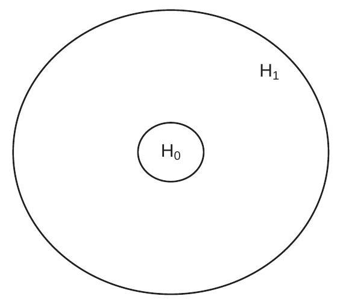
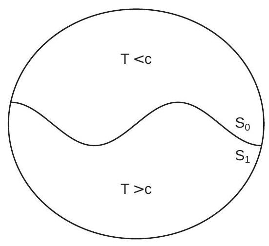
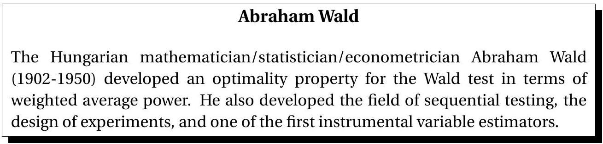
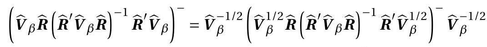
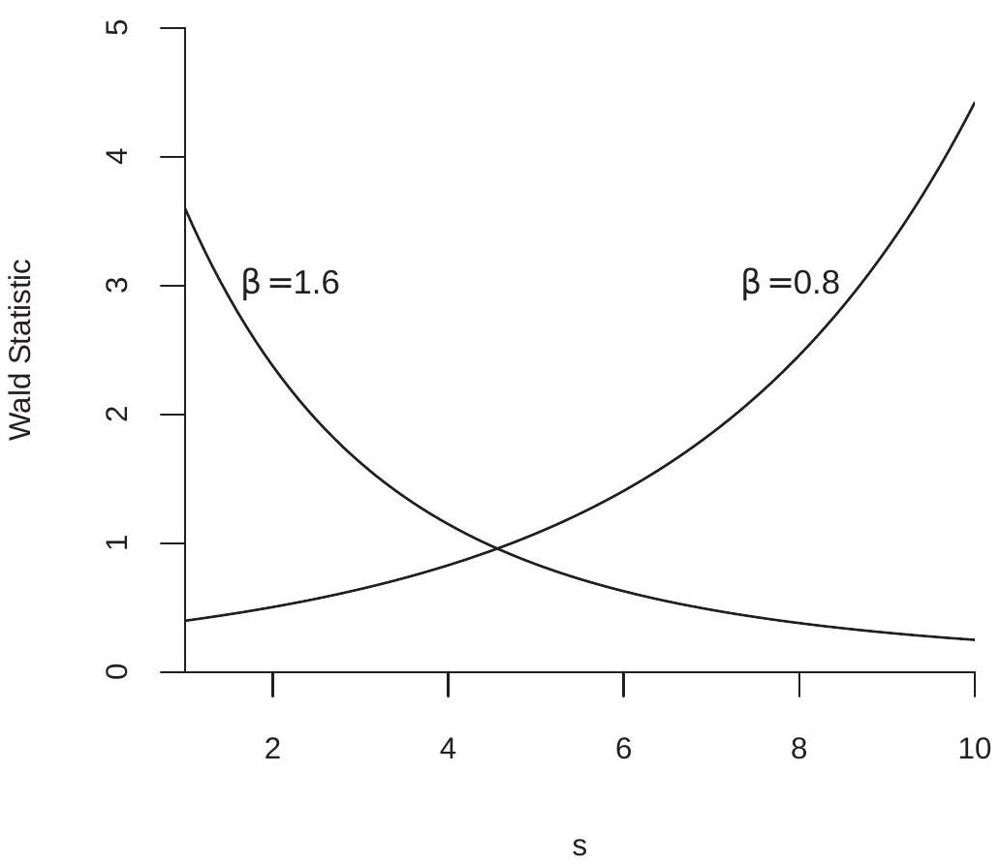
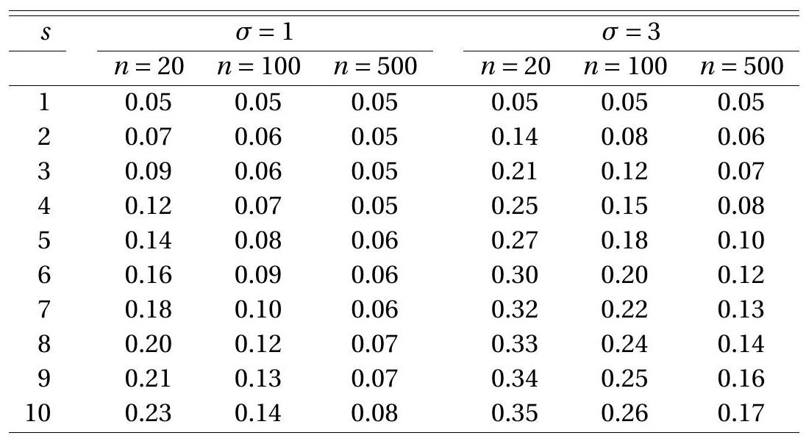
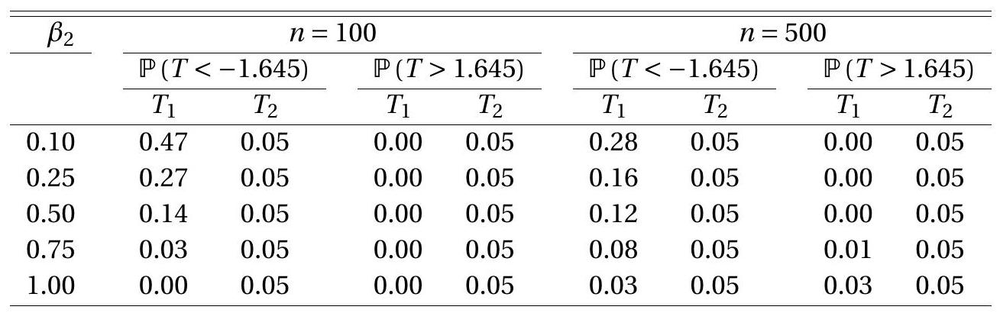
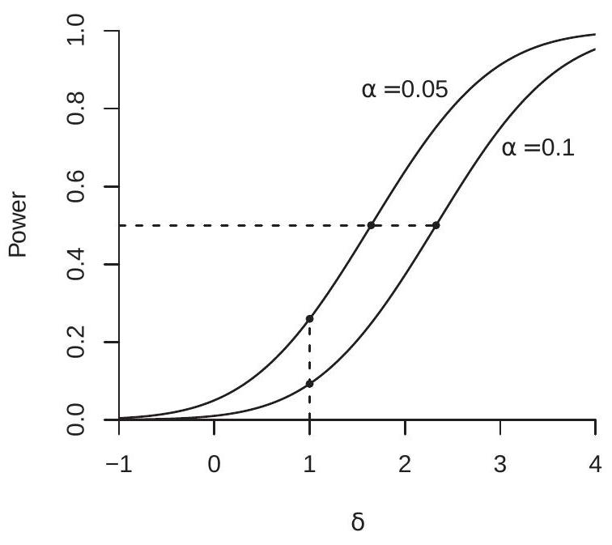
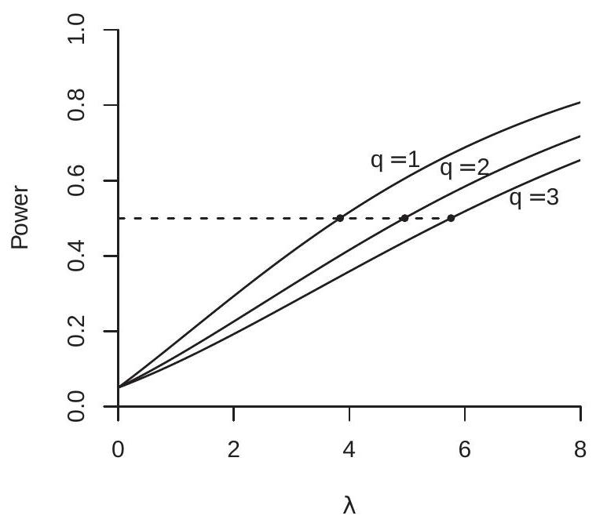

9 Hypothesis Testing
In Chapter 5 we briefly introduced hypothesis testing in the context of the normal regression model. In this chapter we explore hypothesis testing in greater detail with a particular emphasis on asymptotic inference. For more detail on the foundations see Chapter 13 of Probability and Statistics for Economists.
9.1 Hypotheses
In Chapter 8 we discussed estimation subject to restrictions, including linear restrictions (8.1), nonlinear restrictions (8.44), and inequality restrictions (8.49). In this chapter we discuss tests of such restrictions.
Hypothesis tests attempt to assess whether there is evidence contrary to a proposed restriction. Let \(\theta=r(\beta)\) be a \(q \times 1\) parameter of interest where \(r: \mathbb{R}^{k} \rightarrow \Theta \subset \mathbb{R}^{q}\) is some transformation. For example, \(\theta\) may be a single coefficient, e.g. \(\theta=\beta_{j}\), the difference between two coefficients, e.g. \(\theta=\beta_{j}-\beta_{\ell}\), or the ratio of two coefficients, e.g. \(\theta=\beta_{j} / \beta_{\ell}\).
A point hypothesis concerning \(\theta\) is a proposed restriction such as
\[ \theta=\theta_{0} \]
where \(\theta_{0}\) is a hypothesized (known) value.
More generally, letting \(\beta \in B \subset \mathbb{R}^{k}\) be the parameter space, a hypothesis is a restriction \(\beta \in B_{0}\) where \(B_{0}\) is a proper subset of \(B\). This specializes to (9.1) by setting \(B_{0}=\left\{\beta \in B: r(\beta)=\theta_{0}\right\}\).
In this chapter we will focus exclusively on point hypotheses of the form (9.1) as they are the most common and relatively simple to handle.
The hypothesis to be tested is called the null hypothesis.
Definition 9.1 The null hypothesis \(\mathbb{M}_{0}\) is the restriction \(\theta=\theta_{0}\) or \(\beta \in B_{0}\).
We often write the null hypothesis as \(\mathbb{M}_{0}: \theta=\theta_{0}\) or \(\mathbb{M}_{0}: r(\beta)=\theta_{0}\).
The complement of the null hypothesis (the collection of parameter values which do not satisfy the null hypothesis) is called the alternative hypothesis.
Definition 9.2 The alternative hypothesis \(\mathbb{M}_{1}\) is the set \(\left\{\theta \in \Theta: \theta \neq \theta_{0}\right\}\) or \(\left\{\beta \in B: \beta \notin B_{0}\right\}\) We often write the alternative hypothesis as \(\mathbb{M}_{1}: \theta \neq \theta_{0}\) or \(\mathbb{M}_{1}: r(\beta) \neq \theta_{0}\). For simplicity, we often refer to the hypotheses as “the null” and “the alternative”. Figure 9.1(a) illustrates the division of the parameter space into null and alternative hypotheses.

- Null and Alternative Hypotheses

- Acceptance and Rejection Regions
Figure 9.1: Hypothesis Testing
In hypothesis testing, we assume that there is a true (but unknown) value of \(\theta\) and this value either satisfies \(\mathbb{M}_{0}\) or does not satisfy \(\mathbb{M}_{0}\). The goal of hypothesis testing is to assess whether or not \(\mathbb{H}_{0}\) is true by asking if \(\mathbb{M}_{0}\) is consistent with the observed data.
To be specific, take our example of wage determination and consider the question: Does union membership affect wages? We can turn this into a hypothesis test by specifying the null as the restriction that a coefficient on union membership is zero in a wage regression. Consider, for example, the estimates reported in Table 4.1. The coefficient for “Male Union Member” is \(0.095\) (a wage premium of \(9.5 %\) ) and the coefficient for “Female Union Member” is \(0.022\) (a wage premium of \(2.2 %\) ). These are estimates, not the true values. The question is: Are the true coefficients zero? To answer this question the testing method asks the question: Are the observed estimates compatible with the hypothesis, in the sense that the deviation from the hypothesis can be reasonably explained by stochastic variation? Or are the observed estimates incompatible with the hypothesis, in the sense that that the observed estimates would be highly unlikely if the hypothesis were true?
9.2 Acceptance and Rejection
A hypothesis test either accepts the null hypothesis or rejects the null hypothesis in favor of the alternative hypothesis. We can describe these two decisions as “Accept \(\mathbb{H}_{0}\)” and “Reject \(\mathbb{H}_{0}\)”. In the example given in the previous section the decision is either to accept the hypothesis that union membership does not affect wages, or to reject the hypothesis in favor of the alternative that union membership does affect wages.
The decision is based on the data and so is a mapping from the sample space to the decision set. This splits the sample space into two regions \(S_{0}\) and \(S_{1}\) such that if the observed sample falls into \(S_{0}\) we accept \(\mathbb{M}_{0}\), while if the sample falls into \(S_{1}\) we reject \(\mathbb{M}_{0}\). The set \(S_{0}\) is called the acceptance region and the set \(S_{1}\) the rejection or critical region.
It is convenient to express this mapping as a real-valued function called a test statistic
\[ T=T\left(\left(Y_{1}, X_{1}\right), \ldots,\left(Y_{n}, X_{n}\right)\right) \]
relative to a critical value \(c\). The hypothesis test then consists of the decision rule:
Accept \(\mathbb{H}_{0}\) if \(T \leq c\).
Reject \(\mathbb{M}_{0}\) if \(T>c\).
Figure 9.1(b) illustrates the division of the sample space into acceptance and rejection regions.
A test statistic \(T\) should be designed so that small values are likely when \(\mathbb{H}_{0}\) is true and large values are likely when \(\mathbb{M}_{1}\) is true. There is a well developed statistical theory concerning the design of optimal tests. We will not review that theory here, but instead refer the reader to Lehmann and Romano (2005). In this chapter we will summarize the main approaches to the design of test statistics.
The most commonly used test statistic is the absolute value of the t-statistic
\[ T=\left|T\left(\theta_{0}\right)\right| \]
where
\[ T(\theta)=\frac{\widehat{\theta}-\theta}{s(\widehat{\theta})} \]
is the t-statistic from (7.33), \(\widehat{\theta}\) is a point estimator, and \(s(\widehat{\theta})\) its standard error. \(T\) is an appropriate statistic when testing hypotheses on individual coefficients or real-valued parameters \(\theta=h(\beta)\) and \(\theta_{0}\) is the hypothesized value. Quite typically \(\theta_{0}=0\), as interest focuses on whether or not a coefficient equals zero, but this is not the only possibility. For example, interest may focus on whether an elasticity \(\theta\) equals 1 , in which case we may wish to test \(\mathbb{H}_{0}: \theta=1\).
9.3 Type I Error
A false rejection of the null hypothesis \(\mathbb{H}_{0}\) (rejecting \(\mathbb{M}_{0}\) when \(\mathbb{H}_{0}\) is true) is called a Type I error. The probability of a Type I error is called the size of the test.
\[ \mathbb{P}\left[\text { Reject } \mathbb{H}_{0} \mid \mathbb{H}_{0} \text { true }\right]=\mathbb{P}\left[T>c \mid \mathbb{H}_{0} \text { true }\right] . \]
The uniform size of the test is the supremum of (9.4) across all data distributions which satisfy \(\mathbb{H}_{0}\). A primary goal of test construction is to limit the incidence of Type I error by bounding the size of the test.
For the reasons discussed in Chapter 7 , in typical econometric models the exact sampling distributions of estimators and test statistics are unknown and hence we cannot explicitly calculate (9.4). Instead, we typically rely on asymptotic approximations. Suppose that the test statistic has an asymptotic distribution under \(\mathbb{H}_{0}\). That is, when \(\mathbb{H}_{0}\) is true
\[ T \longrightarrow \underset{d}{\xi} \]
as \(n \rightarrow \infty\) for some continuously-distributed random variable \(\xi\). This is not a substantive restriction as most conventional econometric tests satisfy (9.5). Let \(G(u)=\mathbb{P}[\xi \leq u]\) denote the distribution of \(\xi\). We call \(\xi\) (or \(G\) ) the asymptotic null distribution. It is desirable to design test statistics \(T\) whose asymptotic null distribution \(G\) is known and does not depend on unknown parameters. In this case we say that \(T\) is asymptotically pivotal.
For example, if the test statistic equals the absolute \(t\)-statistic from (9.2), then we know from Theorem \(7.11\) that if \(\theta=\theta_{0}\) (that is, the null hypothesis holds), then \(T \underset{d}{\rightarrow}|Z|\) as \(n \rightarrow \infty\) where \(Z \sim \mathrm{N}(0,1)\). This means that \(G(u)=\mathbb{P}[|Z| \leq u]=2 \Phi(u)-1\), the distribution of the absolute value of the standard normal as shown in (7.34). This distribution does not depend on unknowns and is pivotal.
We define the asymptotic size of the test as the asymptotic probability of a Type I error:
\[ \lim _{n \rightarrow \infty} \mathbb{P}\left[T>c \mid \mathbb{M}_{0} \text { true }\right]=\mathbb{P}[\xi>c]=1-G(c) . \]
We see that the asymptotic size of the test is a simple function of the asymptotic null distribution \(G\) and the critical value \(c\). For example, the asymptotic size of a test based on the absolute t-statistic with critical value \(c\) is \(2(1-\Phi(c))\).
In the dominant approach to hypothesis testing the researcher pre-selects a significance level \(\alpha \epsilon\) \((0,1)\) and then selects \(c\) so the asymptotic size is no larger than \(\alpha\). When the asymptotic null distribution \(G\) is pivotal we accomplish this by setting \(c\) equal to the \(1-\alpha\) quantile of the distribution \(G\). (If the distribution \(G\) is not pivotal more complicated methods must be used.) We call \(c\) the asymptotic critical value because it has been selected from the asymptotic null distribution. For example, since \(2(1-\Phi(1.96))=0.05\) it follows that the \(5 %\) asymptotic critical value for the absolute t-statistic is \(c=1.96\). Calculation of normal critical values is done numerically in statistical software. For example, in MATLAB the command is norminv \((1-\alpha / 2)\).
9.4 t tests
As we mentioned earlier, the most common test of the one-dimensional hypothesis \(\mathbb{H}_{0}: \theta=\theta_{0} \in \mathbb{R}\) against the alternative \(\mathbb{M}_{1}: \theta \neq \theta_{0}\) is the absolute value of the \(\mathrm{t}\)-statistic (9.3). We now formally state its asymptotic null distribution, which is a simple application of Theorem 7.11.
Theorem 9.1 Under Assumptions 7.2, 7.3, and \(\mathbb{H}_{0}: \theta=\theta_{0} \in \mathbb{R}, T\left(\theta_{0}\right) \underset{d}{\longrightarrow} Z \sim\) \(\mathrm{N}(0,1)\). For \(c\) satisfying \(\alpha=2(1-\Phi(c)), \mathbb{P}\left[\left|T\left(\theta_{0}\right)\right|>c \mid \mathbb{H}_{0}\right] \rightarrow \alpha\), and the test “Reject \(\mathbb{H}_{0}\) if \(\left|T\left(\theta_{0}\right)\right|>c\)” has asymptotic size \(\alpha\).
Theorem 9.1 shows that asymptotic critical values can be taken from the normal distribution. As in our discussion of asymptotic confidence intervals (Section 7.13) the critical value could alternatively be taken from the student \(t\) distribution, which would be the exact test in the normal regression model (Section 5.12). Indeed, \(t\) critical values are the default in packages such as Stata. Since the critical values from the student \(t\) distribution are (slightly) larger than those from the normal distribution, student \(t\) critical values slightly decrease the rejection probability of the test. In practical applications the difference is typically unimportant unless the sample size is quite small (in which case the asymptotic approximation should be questioned as well).
The alternative hypothesis \(\theta \neq \theta_{0}\) is sometimes called a “two-sided” alternative. In contrast, sometimes we are interested in testing for one-sided alternatives such as \(\mathbb{M}_{1}: \theta>\theta_{0}\) or \(\mathbb{H}_{1}: \theta<\theta_{0}\). Tests of \(\theta=\theta_{0}\) against \(\theta>\theta_{0}\) or \(\theta<\theta_{0}\) are based on the signed t-statistic \(T=T\left(\theta_{0}\right)\). The hypothesis \(\theta=\theta_{0}\) is rejected in favor of \(\theta>\theta_{0}\) if \(T>c\) where \(c\) satisfies \(\alpha=1-\Phi(c)\). Negative values of \(T\) are not taken as evidence against \(\mathbb{M}_{0}\), as point estimates \(\widehat{\theta}\) less than \(\theta_{0}\) do not point to \(\theta>\theta_{0}\). Since the critical values are taken from the single tail of the normal distribution they are smaller than for two-sided tests. Specifically, the asymptotic \(5 %\) critical value is \(c=1.645\). Thus, we reject \(\theta=\theta_{0}\) in favor of \(\theta>\theta_{0}\) if \(T>1.645\).
Conversely, tests of \(\theta=\theta_{0}\) against \(\theta<\theta_{0}\) reject \(\mathbb{M}_{0}\) for negative t-statistics, e.g. if \(T<-c\). Large positive values of \(T\) are not evidence for \(\mathbb{H}_{1}: \theta<\theta_{0}\). An asymptotic \(5 %\) test rejects if \(T<-1.645\).
There seems to be an ambiguity. Should we use the two-sided critical value \(1.96\) or the one-sided critical value 1.645? The answer is that in most cases the two-sided critical value is appropriate. We should use the one-sided critical values only when the parameter space is known to satisfy a one-sided restriction such as \(\theta \geq \theta_{0}\). This is when the test of \(\theta=\theta_{0}\) against \(\theta>\theta_{0}\) makes sense. If the restriction \(\theta \geq \theta_{0}\) is not known a priori then imposing this restriction to test \(\theta=\theta_{0}\) against \(\theta>\theta_{0}\) does not makes sense. Since linear regression coefficients typically do not have a priori sign restrictions, the standard convention is to use two-sided critical values.
This may seem contrary to the way testing is presented in statistical textbooks which often focus on one-sided alternative hypotheses. The latter focus is primarily for pedagogy as the one-sided theoretical problem is cleaner and easier to understand.
9.5 Type II Error and Power
A false acceptance of the null hypothesis \(\mathbb{H}_{0}\) (accepting \(\mathbb{M}_{0}\) when \(\mathbb{H}_{1}\) is true) is called a Type II error. The rejection probability under the alternative hypothesis is called the power of the test, and equals 1 minus the probability of a Type II error:
\[ \pi(\theta)=\mathbb{P}\left[\text { Reject } \mathbb{H}_{0} \mid \mathbb{H}_{1} \text { true }\right]=\mathbb{P}\left[T>c \mid \mathbb{M}_{1} \text { true }\right] . \]
We call \(\pi(\theta)\) the power function and is written as a function of \(\theta\) to indicate its dependence on the true value of the parameter \(\theta\).
In the dominant approach to hypothesis testing the goal of test construction is to have high power subject to the constraint that the size of the test is lower than the pre-specified significance level. Generally, the power of a test depends on the true value of the parameter \(\theta\), and for a well-behaved test the power is increasing both as \(\theta\) moves away from the null hypothesis \(\theta_{0}\) and as the sample size \(n\) increases.
Given the two possible states of the world \(\left(\mathbb{M}_{0}\right.\) or \(\left.\mathbb{H}_{1}\right)\) and the two possible decisions (Accept \(\mathbb{M}_{0}\) or Reject \(\mathbb{M}_{0}\) ) there are four possible pairings of states and decisions as is depicted in Table 9.1.
Table 9.1: Hypothesis Testing Decisions
| {Accept \(\mathbb{H}_{0}\) | {Reject \(\mathbb{M}_{0}\) | |
|---|---|---|
| \(\mathbb{M}_{0}\) true | Correct Decision | Type I Error |
| \(\mathbb{H}_{1}\) true | Type II Error | Correct Decision |
Given a test statistic \(T\), increasing the critical value \(c\) increases the acceptance region \(S_{0}\) while decreasing the rejection region \(S_{1}\). This decreases the likelihood of a Type I error (decreases the size) but increases the likelihood of a Type II error (decreases the power). Thus the choice of \(c\) involves a trade-off between size and the power. This is why the significance level \(\alpha\) of the test cannot be set arbitrarily small. Otherwise the test will not have meaningful power.
It is important to consider the power of a test when interpreting hypothesis tests as an overly narrow focus on size can lead to poor decisions. For example, it is easy to design a test which has perfect size yet has trivial power. Specifically, for any hypothesis we can use the following test: Generate a random variable \(U \sim U[0,1]\) and reject \(\mathbb{M}_{0}\) if \(U<\alpha\). This test has exact size of \(\alpha\). Yet the test also has power precisely equal to \(\alpha\). When the power of a test equals the size we say that the test has trivial power. Nothing is learned from such a test.
9.6 Statistical Significance
Testing requires a pre-selected choice of significance level \(\alpha\) yet there is no objective scientific basis for choice of \(\alpha\). Nevertheless, the common practice is to set \(\alpha=0.05\) (5%). Alternative common values are \(\alpha=0.10(10 %)\) and \(\alpha=0.01(1 %)\). These choices are somewhat the by-product of traditional tables of critical values and statistical software.
The informal reasoning behind the \(5 %\) critical value is to ensure that Type I errors should be relatively unlikely - that the decision “Reject \(\mathbb{H}_{0}\)” has scientific strength - yet the test retains power against reasonable alternatives. The decision “Reject \(\mathbb{M}_{0}\)” means that the evidence is inconsistent with the null hypothesis in the sense that it is relatively unlikely ( 1 in 20) that data generated by the null hypothesis would yield the observed test result.
In contrast, the decision “Accept \(\mathbb{H}_{0}\)” is not a strong statement. It does not mean that the evidence supports \(\mathbb{M}_{0}\), only that there is insufficient evidence to reject \(\mathbb{M}_{0}\). Because of this it is more accurate to use the label “Do not Reject \(\mathbb{M}_{0}\)” instead of “Accept \(\mathbb{H}_{0}\)”.
When a test rejects \(\mathbb{M}_{0}\) at the \(5 %\) significance level it is common to say that the statistic is statistically significant and if the test accepts \(\mathbb{M}_{0}\) it is common to say that the statistic is not statistically significant or that it is statistically insignificant. It is helpful to remember that this is simply a compact way of saying “Using the statistic \(T\) the hypothesis \(\mathbb{H}_{0}\) can [cannot] be rejected at the asymptotic \(5 %\) level.” Furthermore, when the null hypothesis \(\mathbb{M}_{0}: \theta=0\) is rejected it is common to say that the coefficient \(\theta\) is statistically significant, because the test has rejected the hypothesis that the coefficient is equal to zero.
Let us return to the example about the union wage premium as measured in Table 4.1. The absolute \(\mathrm{t}\)-statistic for the coefficient on “Male Union Member” is \(0.095 / 0.020=4.7\), which is greater than the \(5 %\) asymptotic critical value of \(1.96\). Therefore we reject the hypothesis that union membership does not affect wages for men. In this case we can say that union membership is statistically significant for men. However, the absolute t-statistic for the coefficient on “Female Union Member” is \(0.023 / 0.020=1.2\), which is less than \(1.96\) and therefore we do not reject the hypothesis that union membership does not affect wages for women. In this case we find that membership for women is not statistically significant.
When a test accepts a null hypothesis (when a test is not statistically significant) a common misinterpretation is that this is evidence that the null hypothesis is true. This is incorrect. Failure to reject is by itself not evidence. Without an analysis of power we do not know the likelihood of making a Type II error and thus are uncertain. In our wage example it would be a mistake to write that “the regression finds that female union membership has no effect on wages”. This is an incorrect and most unfortunate interpretation. The test has failed to reject the hypothesis that the coefficient is zero but that does not mean that the coefficient is actually zero.
When a test rejects a null hypothesis (when a test is statistically significant) it is strong evidence against the hypothesis (because if the hypothesis were true then rejection is an unlikely event). Rejection should be taken as evidence against the null hypothesis. However, we can never conclude that the null hypothesis is indeed false as we cannot exclude the possibility that we are making a Type I error.
Perhaps more importantly, there is an important distinction between statistical and economic significance. If we correctly reject the hypothesis \(\mathbb{M}_{0}: \theta=0\) it means that the true value of \(\theta\) is non-zero. This includes the possibility that \(\theta\) may be non-zero but close to zero in magnitude. This only makes sense if we interpret the parameters in the context of their relevant models. In our wage regression example we might consider wage effects of \(1 %\) magnitude or less as being “close to zero”. In a log wage regression this corresponds to a dummy variable with a coefficient less than \(0.01\). If the standard error is sufficiently small (less than \(0.005\) ) then a coefficient estimate of \(0.01\) will be statistically significant but not economically significant. This occurs frequently in applications with very large sample sizes where standard errors can be quite small.
The solution is to focus whenever possible on confidence intervals and the economic meaning of the coefficients. For example, if the coefficient estimate is \(0.005\) with a standard error of \(0.002\) then a \(95 %\) confidence interval would be \([0.001,0.009]\) indicating that the true effect is likely between \(0 %\) and \(1 %\), and hence is slightly positive but small. This is much more informative than the misleading statement “the effect is statistically positive”.
9.7 P-Values
Continuing with the wage regression estimates reported in Table 4.1, consider another question: Does marriage status affect wages? To test the hypothesis that marriage status has no effect on wages, we examine the t-statistics for the coefficients on “Married Male” and “Married Female” in Table 4.1, which are \(0.211 / 0.010=22\) and \(0.016 / 0.010=1.7\), respectively. The first exceeds the asymptotic \(5 %\) critical value of \(1.96\) so we reject the hypothesis for men. The second is smaller than \(1.96\) so we fail to reject the hypothesis for women. Taking a second look at the statistics we see that the statistic for men (22) is exceptionally high and that for women (1.7) is only slightly below the critical value. Suppose that the \(\mathrm{t}\)-statistic for women were slightly increased to 2.0. This is larger than the critical value so would lead to the decision “Reject \(\mathbb{M}_{0}\)” rather than “Accept \(\mathbb{M}_{0}\)”. Should we really be making a different decision if the \(\mathrm{t}\)-statistic is \(2.0\) rather than 1.7? The difference in values is small, shouldn’t the difference in the decision be also small? Thinking through these examples it seems unsatisfactory to simply report “Accept \(\mathbb{M}_{0}\)” or “Reject \(\mathbb{H}_{0}\)”. These two decisions do not summarize the evidence. Instead, the magnitude of the statistic \(T\) suggests a “degree of evidence” against \(\mathbb{H}_{0}\). How can we take this into account?
The answer is to report what is known as the asymptotic p-value
\[ p=1-G(T) . \]
Since the distribution function \(G\) is monotonically increasing, the p-value is a monotonically decreasing function of \(T\) and is an equivalent test statistic. Instead of rejecting \(\mathbb{R}_{0}\) at the significance level \(\alpha\) if \(T>c\), we can reject \(\mathbb{M}_{0}\) if \(p<\alpha\). Thus it is sufficient to report \(p\), and let the reader decide. In practice, the p-value is calculated numerically. For example, in MATLAB the command is \(2 *(1-\operatorname{normal} c d f(\mathrm{abs}(\mathrm{t})))\).
It is instructive to interpret \(p\) as the marginal significance level: the smallest value of \(\alpha\) for which the test \(T\) “rejects” the null hypothesis. That is, \(p=0.11\) means that \(T\) rejects \(\mathbb{H}_{0}\) for all significance levels greater than \(0.11\), but fails to reject \(\mathbb{M}_{0}\) for significance levels less than \(0.11\).
Furthermore, the asymptotic p-value has a very convenient asymptotic null distribution. Since \(T-\vec{d}\) \(\xi\) under \(\mathbb{M}_{0}\), then \(p=1-G(T) \underset{d}{\longrightarrow} 1-G(\xi)\), which has the distribution
\[ \begin{aligned} \mathbb{P}[1-G(\xi) \leq u] &=\mathbb{P}[1-u \leq G(\xi)] \\ &=1-\mathbb{P}\left[\xi \leq G^{-1}(1-u)\right] \\ &=1-G\left(G^{-1}(1-u)\right) \\ &=1-(1-u) \\ &=u, \end{aligned} \]
which is the uniform distribution on \([0,1]\). (This calculation assumes that \(G(u)\) is strictly increasing which is true for conventional asymptotic distributions such as the normal.) Thus \(p \underset{d}{\longrightarrow} U[0,1]\). This means that the “unusualness” of \(p\) is easier to interpret than the “unusualness” of \(T\).
An important caveat is that the \(\mathrm{p}\)-value \(p\) should not be interpreted as the probability that either hypothesis is true. A common mis-interpretation is that \(p\) is the probability “that the null hypothesis is true.” This is incorrect. Rather, \(p\) is the marginal significance level-a measure of the strength of information against the null hypothesis. For a t-statistic the p-value can be calculated either using the normal distribution or the student \(t\) distribution, the latter presented in Section 5.12. p-values calculated using the student \(t\) will be slightly larger, though the difference is small when the sample size is large.
Returning to our empirical example, for the test that the coefficient on “Married Male” is zero the pvalue is \(0.000\). This means that it would be nearly impossible to observe a t-statistic as large as 22 when the true value of the coefficient is zero. When presented with such evidence we can say that we “strongly reject” the null hypothesis, that the test is “highly significant”, or that “the test rejects at any conventional critical value”. In contrast, the p-value for the coefficient on “Married Female” is \(0.094\). In this context it is typical to say that the test is “close to significant”, meaning that the p-value is larger than \(0.05\), but not too much larger.
A related but inferior empirical practice is to append asterisks \((*)\) to coefficient estimates or test statistics to indicate the level of significance. A common practice to to append a single asterisk (\textit{) for an estimate or test statistic which exceeds the \(10 %\) critical value (i.e., is significant at the \(10 %\) level), append a double asterisk () for a test which exceeds the \(5 %\) critical value, and append a triple asterisk (}) for a test which exceeds the \(1 %\) critical value. Such a practice can be better than a table of raw test statistics as the asterisks permit a quick interpretation of significance. On the other hand, asterisks are inferior to p-values, which are also easy and quick to interpret. The goal is essentially the same; it is wiser to report p-values whenever possible and avoid the use of asterisks.
Our recommendation is that the best empirical practice is to compute and report the asymptotic pvalue \(p\) rather than simply the test statistic \(T\), the binary decision Accept/Reject, or appending asterisks. The p-value is a simple statistic, easy to interpret, and contains more information than the other choices.
We now summarize the main features of hypothesis testing.
Select a significance level \(\alpha\).
Select a test statistic \(T\) with asymptotic distribution \(T \underset{d}{\rightarrow} \xi\) under \(\mathbb{H}_{0}\).
Set the asymptotic critical value \(c\) so that \(1-G(c)=\alpha\), where \(G\) is the distribution function of \(\xi\).
Calculate the asymptotic p-value \(p=1-G(T)\).
Reject \(\mathbb{R}_{0}\) if \(T>c\), or equivalently \(p<\alpha\).
Accept \(\mathbb{H}_{0}\) if \(T \leq c\), or equivalently \(p \geq \alpha\).
Report \(p\) to summarize the evidence concerning \(\mathbb{M}_{0}\) versus \(\mathbb{M}_{1}\).
9.8 t-ratios and the Abuse of Testing
In Section \(4.19\) we argued that a good applied practice is to report coefficient estimates \(\widehat{\theta}\) and standard errors \(s(\widehat{\theta})\) for all coefficients of interest in estimated models. With \(\widehat{\theta}\) and \(s(\widehat{\theta})\) the reader can easily construct confidence intervals \([\widehat{\theta} \pm 2 s(\widehat{\theta})]\) and t-statistics \(\left(\widehat{\theta}-\theta_{0}\right) / s(\widehat{\theta})\) for hypotheses of interest.
Some applied papers (especially older ones) report t-ratios \(T=\widehat{\theta} / s(\widehat{\theta})\) instead of standard errors. This is poor econometric practice. While the same information is being reported (you can back out standard errors by division, e.g. \(s(\widehat{\theta})=\widehat{\theta} / T)\), standard errors are generally more helpful to readers than t-ratios. Standard errors help the reader focus on the estimation precision and confidence intervals, while t-ratios focus attention on statistical significance. While statistical significance is important, it is less important that the parameter estimates themselves and their confidence intervals. The focus should be on the meaning of the parameter estimates, their magnitudes, and their interpretation, not on listing which variables have significant (e.g. non-zero) coefficients. In many modern applications sample sizes are very large so standard errors can be very small. Consequently t-ratios can be large even if the coefficient estimates are economically small. In such contexts it may not be interesting to announce “The coefficient is non-zero!” Instead, what is interesting to announce is that “The coefficient estimate is economically interesting!”
In particular, some applied papers report coefficient estimates and t-ratios and limit their discussion of the results to describing which variables are “significant” (meaning that their t-ratios exceed 2) and the signs of the coefficient estimates. This is very poor empirical work and should be studiously avoided. It is also a recipe for banishment of your work to lower tier economics journals.
Fundamentally, the common t-ratio is a test for the hypothesis that a coefficient equals zero. This should be reported and discussed when this is an interesting economic hypothesis of interest. But if this is not the case it is distracting.
One problem is that standard packages, such as Stata, by default report t-statistics and p-values for every estimated coefficient. While this can be useful (as a user doesn’t need to explicitly ask to test a desired coefficient) it can be misleading as it may unintentionally suggest that the entire list of t-statistics and p-values are important. Instead, a user should focus on tests of scientifically motivated hypotheses.
In general, when a coefficient \(\theta\) is of interest it is constructive to focus on the point estimate, its standard error, and its confidence interval. The point estimate gives our “best guess” for the value. The standard error is a measure of precision. The confidence interval gives us the range of values consistent with the data. If the standard error is large then the point estimate is not a good summary about \(\theta\). The endpoints of the confidence interval describe the bounds on the likely possibilities. If the confidence interval embraces too broad a set of values for \(\theta\) then the dataset is not sufficiently informative to render useful inferences about \(\theta\). On the other hand if the confidence interval is tight then the data have produced an accurate estimate and the focus should be on the value and interpretation of this estimate. In contrast, the statement “the t-ratio is highly significant” has little interpretive value.
The above discussion requires that the researcher knows what the coefficient \(\theta\) means (in terms of the economic problem) and can interpret values and magnitudes, not just signs. This is critical for good applied econometric practice.
For example, consider the question about the effect of marriage status on mean log wages. We had found that the effect is “highly significant” for men and “close to significant” for women. Now, let’s construct asymptotic \(95 %\) confidence intervals for the coefficients. The one for men is \([0.19,0.23]\) and that for women is \([-0.00,0.03]\). This shows that average wages for married men are about \(19-23 %\) higher than for unmarried men, which is substantial, while the difference for women is about 0-3%, which is small. These magnitudes are more informative than the results of the hypothesis tests.
9.9 Wald Tests
The t-test is appropriate when the null hypothesis is a real-valued restriction. More generally there may be multiple restrictions on the coefficient vector \(\beta\). Suppose that we have \(q>1\) restrictions which can be written in the form (9.1). It is natural to estimate \(\theta=r(\beta)\) by the plug-in estimator \(\widehat{\theta}=r(\widehat{\beta})\). To test \(\mathbb{H}_{0}: \theta=\theta_{0}\) against \(\mathbb{H}_{1}: \theta \neq \theta_{0}\) one approach is to measure the magnitude of the discrepancy \(\widehat{\theta}-\theta_{0}\). As this is a vector there is more than one measure of its length. One simple measure is the weighted quadratic form known as the Wald statistic. This is (7.37) evaluated at the null hypothesis
\[ W=W\left(\theta_{0}\right)=\left(\widehat{\theta}-\theta_{0}\right)^{\prime} \widehat{\boldsymbol{V}}_{\widehat{\theta}}^{-1}\left(\widehat{\theta}-\theta_{0}\right) \]
where \(\widehat{\boldsymbol{V}}_{\widehat{\theta}}=\widehat{\boldsymbol{R}}^{\prime} \widehat{\boldsymbol{V}}_{\widehat{\beta}} \widehat{\boldsymbol{R}}\) is an estimator of \(\boldsymbol{V}_{\widehat{\theta}}\) and \(\widehat{\boldsymbol{R}}=\frac{\partial}{\partial \beta} r(\widehat{\beta})^{\prime}\). Notice that we can write \(W\) alternatively as
\[ W=n\left(\widehat{\theta}-\theta_{0}\right)^{\prime} \widehat{\boldsymbol{V}}_{\theta}^{-1}\left(\widehat{\theta}-\theta_{0}\right) \]
using the asymptotic variance estimator \(\widehat{\boldsymbol{V}}_{\theta}\), or we can write it directly as a function of \(\widehat{\beta}\) as
\[ W=\left(r(\widehat{\beta})-\theta_{0}\right)^{\prime}\left(\widehat{\boldsymbol{R}}^{\prime} \widehat{\boldsymbol{V}}_{\widehat{\beta}} \widehat{\boldsymbol{R}}\right)^{-1}\left(r(\widehat{\beta})-\theta_{0}\right) . \]
Also, when \(r(\beta)=\boldsymbol{R}^{\prime} \beta\) is a linear function of \(\beta\), then the Wald statistic simplifies to
\[ W=\left(\boldsymbol{R}^{\prime} \widehat{\beta}-\theta_{0}\right)^{\prime}\left(\boldsymbol{R}^{\prime} \widehat{\boldsymbol{V}}_{\widehat{\beta}} \boldsymbol{R}\right)^{-1}\left(\boldsymbol{R}^{\prime} \widehat{\beta}-\theta_{0}\right) . \]
The Wald statistic \(W\) is a weighted Euclidean measure of the length of the vector \(\widehat{\theta}-\theta_{0}\). When \(q=1\) then \(W=T^{2}\), the square of the t-statistic, so hypothesis tests based on \(W\) and \(|T|\) are equivalent. The Wald statistic (9.6) is a generalization of the t-statistic to the case of multiple restrictions. As the Wald statistic is symmetric in the argument \(\widehat{\theta}-\theta_{0}\) it treats positive and negative alternatives symmetrically. Thus the inherent alternative is always two-sided.
As shown in Theorem 7.13, when \(\beta\) satisfies \(r(\beta)=\theta_{0}\) then \(W \underset{d}{\rightarrow} \chi_{q}^{2}\), a chi-square random variable with \(q\) degrees of freedom. Let \(G_{q}(u)\) denote the \(\chi_{q}^{2}\) distribution function. For a given significance level \(\alpha\) the asymptotic critical value \(c\) satisfies \(\alpha=1-G_{q}(c)\). For example, the \(5 %\) critical values for \(q=1, q=2\), and \(q=3\) are \(3.84,5.99\), and \(7.82\), respectively, and in general the level \(\alpha\) critical value can be calculated in MATLAB as chi2inv \((1-\alpha, q)\). An asymptotic test rejects \(\mathbb{M}_{0}\) in favor of \(\mathbb{M}_{1}\) if \(W>c\). As with t-tests, it is conventional to describe a Wald test as “significant” if \(W\) exceeds the \(5 %\) asymptotic critical value.
Theorem 9.2 Under Assumptions 7.2, 7.3, 7.4, and \(\mathbb{M}_{0}: \theta=\theta_{0} \in \mathbb{R}^{q}\), then \(W \vec{d}\) \(\chi_{q}^{2}\). For \(c\) satisfying \(\alpha=1-G_{q}(c), \mathbb{P}\left(W>c \mid \mathbb{H}_{0}\right) \longrightarrow \alpha\) so the test “Reject \(\mathbb{H}_{0}\) if \(W>c\)” has asymptotic size \(\alpha\).
Notice that the asymptotic distribution in Theorem \(9.2\) depends solely on \(q\), the number of restrictions being tested. It does not depend on \(k\), the number of parameters estimated.
The asymptotic p-value for \(W\) is \(p=1-G_{q}(W)\), and this is particularly useful when testing multiple restrictions. For example, if you write that a Wald test on eight restrictions ( \(q=8\) ) has the value \(W=\) \(11.2\) it is difficult for a reader to assess the magnitude of this statistic unless they have quick access to a statistical table or software. Instead, if you write that the p-value is \(p=0.19\) (as is the case for \(W=11.2\) and \(q=8\) ) then it is simple for a reader to interpret its magnitude as “insignificant”. To calculate the asymptotic p-value for a Wald statistic in MATLAB use the command \(1-\operatorname{ch} i 2 c d f(w, q)\).
Some packages (including Stata) and papers report \(F\) versions of Wald statistics. For any Wald statistic \(W\) which tests a \(q\)-dimensional restriction, the \(F\) version of the test is
\[ F=W / q . \]
When \(F\) is reported, it is conventional to use \(F_{q, n-k}\) critical values and \(\mathrm{p}\)-values rather than \(\chi_{q}^{2}\) values. The connection between Wald and F statistics is demonstrated in Section \(9.14\) where we show that when Wald statistics are calculated using a homoskedastic covariance matrix then \(F=W / q\) is identicial to the F statistic of (5.19). While there is no formal justification to using the \(F_{q, n-k}\) distribution for nonhomoskedastic covariance matrices, the \(F_{q, n-k}\) distribution provides continuity with the exact distribution theory under normality and is a bit more conservative than the \(\chi_{q}^{2}\) distribution. (Furthermore, the difference is small when \(n-k\) is moderately large.)
To implement a test of zero restrictions in Stata an easy method is to use the command test X1 X2 where X1 and X2 are the names of the variables whose coefficients are hypothesized to equal zero. The \(F\) version of the Wald statistic is reported using the covariance matrix calculated by the method specified in the regression command. A p-value is reported, calculated using the \(F_{q, n-k}\) distribution.
To illustrate, consider the empirical results presented in Table 4.1. The hypothesis “Union membership does not affect wages” is the joint restriction that both coefficients on “Male Union Member” and “Female Union Member” are zero. We calculate the Wald statistic for this joint hypothesis and find \(W=23\) (or \(F=12.5\) ) with a p-value of \(p=0.000\). Thus we reject the null hypothesis in favor of the alternative that at least one of the coefficients is non-zero. This does not mean that both coefficients are non-zero, just that one of the two is non-zero. Therefore examining both the joint Wald statistic and the individual t-statistics is useful for interpretation.
As a second example from the same regression, take the hypothesis that married status has no effect on mean wages for women. This is the joint restriction that the coefficients on “Married Female” and “Formerly Married Female” are zero. The Wald statistic for this hypothesis is \(W=6.4(F=3.2)\) with a p-value of \(0.04\). Such a p-value is typically called “marginally significant” in the sense that it is slightly smaller than \(0.05\).
The Wald statistic was proposed by Wald (1943).

9.10 Homoskedastic Wald Tests
If the error is known to be homoskedastic then it is appropriate to use the homoskedastic Wald statistic (7.38) which replaces \(\widehat{\boldsymbol{V}}_{\widehat{\theta}}\) with the homoskedastic estimator \(\widehat{\boldsymbol{V}}_{\widehat{\theta}}^{0}\). This statistic equals
\[ \begin{aligned} W^{0} &=\left(\widehat{\theta}-\theta_{0}\right)^{\prime}\left(\widehat{\boldsymbol{V}}_{\widehat{\theta}}^{0}\right)^{-1}\left(\widehat{\theta}-\theta_{0}\right) \\ &=\left(r(\widehat{\beta})-\theta_{0}\right)^{\prime}\left(\boldsymbol{R}^{\prime}\left(\boldsymbol{X}^{\prime} \boldsymbol{X}\right)^{-1} \widehat{\boldsymbol{R}}\right)^{-1}\left(r(\widehat{\beta})-\theta_{0}\right) / s^{2} . \end{aligned} \]
In the case of linear hypotheses \(\mathbb{M}_{0}: \boldsymbol{R}^{\prime} \beta=\theta_{0}\) we can write this as
\[ W^{0}=\left(\boldsymbol{R}^{\prime} \widehat{\beta}-\theta_{0}\right)^{\prime}\left(\boldsymbol{R}^{\prime}\left(\boldsymbol{X}^{\prime} \boldsymbol{X}\right)^{-1} \boldsymbol{R}\right)^{-1}\left(\boldsymbol{R}^{\prime} \widehat{\beta}-\theta_{0}\right) / s^{2} . \]
We call \(W^{0}\) a homoskedastic Wald statistic as it is appropriate when the errors are conditionally homoskedastic.
When \(q=1\) then \(W^{0}=T^{2}\), the square of the t-statistic where the latter is computed with a homoskedastic standard error. Theorem 9.3 Under Assumptions \(7.2\) and 7.3, \(\mathbb{E}\left[e^{2} \mid X\right]=\sigma^{2}>0\), and \(\mathbb{M}_{0}: \theta=\) \(\theta_{0} \in \mathbb{R}^{q}\), then \(W^{0} \underset{d}{\longrightarrow} \chi_{q}^{2}\). For \(c\) satisfying \(\alpha=1-G_{q}(c), \mathbb{P}\left[W^{0}>c \mid \mathbb{H}_{0}\right] \longrightarrow \alpha\) so the test “Reject \(\mathbb{M}_{0}\) if \(W^{0}>c\)” has asymptotic size \(\alpha\).
9.11 Criterion-Based Tests
The Wald statistic is based on the length of the vector \(\widehat{\theta}-\theta_{0}\) : the discrepancy between the estimator \(\widehat{\theta}=r(\widehat{\beta})\) and the hypothesized value \(\theta_{0}\). An alternative class of tests is based on the discrepancy between the criterion function minimized with and without the restriction.
Criterion-based testing applies when we have a criterion function, say \(J(\beta)\) with \(\beta \in B\), which is minimized for estimation, and the goal is to test \(\mathbb{M}_{0}: \beta \in B_{0}\) versus \(\mathbb{M}_{1}: \beta \notin B_{0}\) where \(B_{0} \subset \beta\). Minimizing the criterion function over \(B\) and \(B_{0}\) we obtain the unrestricted and restricted estimators
\[ \begin{aligned} &\widehat{\beta}=\underset{\beta \in B}{\operatorname{argmin}} J(\beta) \\ &\widetilde{\beta}=\underset{\beta \in B_{0}}{\operatorname{argmin}} J(\beta) . \end{aligned} \]
The criterion-based statistic for \(\mathbb{H}_{0}\) versus \(\mathbb{H}_{1}\) is proportional to
\[ J=\min _{\beta \in B_{0}} J(\beta)-\min _{\beta \in B} J(\beta)=J(\widetilde{\beta})-J(\widehat{\beta}) . \]
The criterion-based statistic \(J\) is sometimes called a distance statistic, a minimum-distance statistic, or a likelihood-ratio-like statistic.
Since \(B_{0}\) is a subset of \(B, J(\widetilde{\beta}) \geq J(\widehat{\beta})\) and thus \(J \geq 0\). The statistic \(J\) measures the cost on the criterion of imposing the null restriction \(\beta \in B_{0}\).
9.12 Minimum Distance Tests
The minimum distance test is based on the minimum distance criterion (8.19)
\[ J(\beta)=n(\widehat{\beta}-\beta)^{\prime} \widehat{\boldsymbol{W}}(\widehat{\beta}-\beta) \]
with \(\widehat{\beta}\) the unrestricted least squares estimator. The restricted estimator \(\widetilde{\beta}_{\text {md }}\) minimizes (9.8) subject to \(\beta \in B_{0}\). Observing that \(J(\widehat{\beta})=0\), the minimum distance statistic simplifies to
\[ J=J\left(\widetilde{\beta}_{\mathrm{md}}\right)=n\left(\widehat{\beta}-\widetilde{\beta}_{\mathrm{md}}\right)^{\prime} \widehat{\boldsymbol{W}}\left(\widehat{\beta}-\widetilde{\beta}_{\mathrm{md}}\right) . \]
The efficient minimum distance estimator \(\widetilde{\beta}_{\mathrm{emd}}\) is obtained by setting \(\widehat{\boldsymbol{W}}=\widehat{\boldsymbol{V}}_{\beta}^{-1}\) in (9.8) and (9.9). The efficient minimum distance statistic for \(\mathbb{H}_{0}: \beta \in B_{0}\) is therefore
\[ J^{*}=n\left(\widehat{\beta}-\widetilde{\beta}_{\mathrm{emd}}\right)^{\prime} \widehat{\boldsymbol{V}}_{\beta}^{-1}\left(\widehat{\beta}-\widetilde{\beta}_{\mathrm{emd}}\right) . \]
Consider the class of linear hypotheses \(\mathbb{M}_{0}: \boldsymbol{R}^{\prime} \beta=\theta_{0}\). In this case we know from (8.25) that the efficient minimum distance estimator \(\widetilde{\beta}_{\mathrm{emd}}\) subject to the constraint \(\boldsymbol{R}^{\prime} \beta=\theta_{0}\) is
\[ \widetilde{\beta}_{\mathrm{emd}}=\widehat{\beta}-\widehat{\boldsymbol{V}}_{\beta} \boldsymbol{R}\left(\boldsymbol{R}^{\prime} \widehat{\boldsymbol{V}}_{\beta} \boldsymbol{R}\right)^{-1}\left(\boldsymbol{R}^{\prime} \widehat{\beta}-\theta_{0}\right) \]
and thus
\[ \widehat{\beta}-\widetilde{\beta}_{\mathrm{emd}}=\widehat{\boldsymbol{V}}_{\beta} \boldsymbol{R}\left(\boldsymbol{R}^{\prime} \widehat{\boldsymbol{V}}_{\beta} \boldsymbol{R}\right)^{-1}\left(\boldsymbol{R}^{\prime} \widehat{\beta}-\theta_{0}\right) . \]
Substituting into (9.10) we find
\[ \begin{aligned} J^{*} &=n\left(\boldsymbol{R}^{\prime} \widehat{\beta}-\theta_{0}\right)^{\prime}\left(\boldsymbol{R}^{\prime} \widehat{\boldsymbol{V}}_{\beta} \boldsymbol{R}\right)^{-1} \boldsymbol{R}^{\prime} \widehat{\boldsymbol{V}}_{\beta} \widehat{\boldsymbol{V}}_{\boldsymbol{\beta}}^{-1} \widehat{\boldsymbol{V}}_{\beta} \boldsymbol{R}\left(\boldsymbol{R}^{\prime} \widehat{\boldsymbol{V}}_{\beta} \boldsymbol{R}\right)^{-1}\left(\boldsymbol{R}^{\prime} \widehat{\beta}-\theta_{0}\right) \\ &=n\left(\boldsymbol{R}^{\prime} \widehat{\beta}-\theta_{0}\right)^{\prime}\left(\boldsymbol{R}^{\prime} \widehat{\boldsymbol{V}}_{\beta} \boldsymbol{R}\right)^{-1}\left(\boldsymbol{R}^{\prime} \widehat{\beta}-\theta_{0}\right) \\ &=W, \end{aligned} \]
which is the Wald statistic (9.6).
Thus for linear hypotheses \(\mathbb{H}_{0}: \boldsymbol{R}^{\prime} \beta=\theta_{0}\), the efficient minimum distance statistic \(J^{*}\) is identical to the Wald statistic (9.6). For nonlinear hypotheses, however, the Wald and minimum distance statistics are different.
Newey and West (1987a) established the asymptotic null distribution of \(J^{*}\).
Theorem 9.4 Under Assumptions \(7.2,7.3,7.4\), and \(\mathbb{H}_{0}: \theta=\theta_{0} \in \mathbb{R}^{q}, J^{*} \underset{d}{\longrightarrow} \chi_{q}^{2}\).
Testing using the minimum distance statistic \(J^{*}\) is similar to testing using the Wald statistic \(W\). Critical values and p-values are computed using the \(\chi_{q}^{2}\) distribution. \(\mathbb{H}_{0}\) is rejected in favor of \(\mathbb{H}_{1}\) if \(J^{*}\) exceeds the level \(\alpha\) critical value, which can be calculated in MATLAB as chi2inv \((1-\alpha, q)\). The asymptotic pvalue is \(p=1-G_{q}\left(J^{*}\right)\). In MATLAB, use the command \(1-\operatorname{chi} 2 \mathrm{cdf}(\mathrm{J}, \mathrm{q})\).
We now demonstrate Theorem 9.4. The conditions of Theorem \(8.10\) hold, because \(\mathbb{H}_{0}\) implies Assumption 8.1. From (8.54) with \(\widehat{\boldsymbol{W}}=\widehat{\boldsymbol{V}}_{\beta}\), we see that
\[ \begin{aligned} \sqrt{n}\left(\widehat{\beta}-\widetilde{\beta}_{\mathrm{emd}}\right) &=\widehat{\boldsymbol{V}}_{\beta} \widehat{\boldsymbol{R}}\left(\boldsymbol{R}_{n}^{* \prime} \widehat{\boldsymbol{V}}_{\beta} \widehat{\boldsymbol{R}}\right)^{-1} \boldsymbol{R}_{n}^{* \prime} \sqrt{n}(\widehat{\beta}-\beta) \\ & \underset{d}{\longrightarrow} \boldsymbol{V}_{\beta} \boldsymbol{R}\left(\boldsymbol{R}^{\prime} \boldsymbol{V}_{\beta} \boldsymbol{R}\right)^{-1} \boldsymbol{R}^{\prime} \mathrm{N}\left(0, \boldsymbol{V}_{\beta}\right)=\boldsymbol{V}_{\beta} \boldsymbol{R} Z \end{aligned} \]
where \(Z \sim \mathrm{N}\left(0,\left(\boldsymbol{R}^{\prime} \boldsymbol{V}_{\beta} \boldsymbol{R}\right)^{-1}\right)\). Thus
\[ J^{*}=n\left(\widehat{\beta}-\widetilde{\beta}_{\mathrm{emd}}\right)^{\prime} \widehat{\boldsymbol{V}}_{\beta}^{-1}\left(\widehat{\beta}-\widetilde{\beta}_{\mathrm{emd}}\right) \underset{d}{\longrightarrow} Z^{\prime} \boldsymbol{R}^{\prime} \boldsymbol{V}_{\beta} \boldsymbol{V}_{\beta}^{-1} \boldsymbol{V}_{\beta} \boldsymbol{R} Z=Z^{\prime}\left(\boldsymbol{R}^{\prime} \boldsymbol{V}_{\beta} \boldsymbol{R}\right) Z=\chi_{q}^{2} \]
as claimed.
9.13 Minimum Distance Tests Under Homoskedasticity
If we set \(\widehat{\boldsymbol{W}}=\widehat{\boldsymbol{Q}}_{X X} / s^{2}\) in (9.8) we obtain the criterion (8.20)
\[ J^{0}(\beta)=n(\widehat{\beta}-\beta)^{\prime} \widehat{\boldsymbol{Q}}_{X X}(\widehat{\beta}-\beta) / s^{2} . \]
A minimum distance statistic for \(\mathbb{\Perp}_{0}: \beta \in B_{0}\) is
\[ J^{0}=\min _{\beta \in B_{0}} J^{0}(\beta) . \]
Equation (8.21) showed that \(\operatorname{SSE}(\beta)=n \widehat{\sigma}^{2}+s^{2} J^{0}(\beta)\). So the minimizers of \(\operatorname{SSE}(\beta)\) and \(J^{0}(\beta)\) are identical. Thus the constrained minimizer of \(J^{0}(\beta)\) is constrained least squares
\[ \widetilde{\beta}_{\text {cls }}=\underset{\beta \in B_{0}}{\operatorname{argmin}} J^{0}(\beta)=\underset{\beta \in B_{0}}{\operatorname{argmin}} \operatorname{SSE}(\beta) \]
and therefore
\[ J_{n}^{0}=J_{n}^{0}\left(\widetilde{\beta}_{\mathrm{cls}}\right)=n\left(\widehat{\beta}-\widetilde{\beta}_{\mathrm{cls}}\right)^{\prime} \widehat{\boldsymbol{Q}}_{X X}\left(\widehat{\beta}-\widetilde{\beta}_{\mathrm{cls}}\right) / s^{2} . \]
In the special case of linear hypotheses \(\mathbb{M}_{0}: \boldsymbol{R}^{\prime} \beta=\theta_{0}\), the constrained least squares estimator subject to \(\boldsymbol{R}^{\prime} \beta=\theta_{0}\) has the solution (8.9)
\[ \widetilde{\beta}_{\mathrm{cls}}=\widehat{\beta}-\widehat{\boldsymbol{Q}}_{X X}^{-1} \boldsymbol{R}\left(\boldsymbol{R}^{\prime} \widehat{\boldsymbol{Q}}_{X X}^{-1} \boldsymbol{R}\right)^{-1}\left(\boldsymbol{R}^{\prime} \widehat{\beta}-\theta_{0}\right) \]
and solving we find
\[ J^{0}=n\left(\boldsymbol{R}^{\prime} \widehat{\beta}-\theta_{0}\right)^{\prime}\left(\boldsymbol{R}^{\prime} \widehat{\boldsymbol{Q}}_{X X}^{-1} \boldsymbol{R}\right)^{-1}\left(\boldsymbol{R}^{\prime} \widehat{\beta}-\theta_{0}\right) / s^{2}=W^{0} . \]
This is the homoskedastic Wald statistic (9.7). Thus for testing linear hypotheses, homoskedastic minimum distance and Wald statistics agree.
For nonlinear hypotheses they disagree, but have the same null asymptotic distribution.
Theorem 9.5 Under Assumptions \(7.2\) and \(7.3, \mathbb{E}\left[e^{2} \mid X\right]=\sigma^{2}>0\), and \(\mathbb{M}_{0}: \theta=\) \(\theta_{0} \in \mathbb{R}^{q}\), then \(J^{0} \underset{d}{\longrightarrow} \chi_{q}^{2}\)
9.14 F Tests
In Section \(5.13\) we introduced the \(F\) test for exclusion restrictions in the normal regression model. In this section we generalize this test to a broader set of restrictions. Let \(B_{0} \subset \mathbb{R}^{k}\) be a constrained parameter space which imposes \(q\) restrictions on \(\beta\).
Let \(\widehat{\beta}_{\text {ols }}\) be the unrestricted least squares estimator and let \(\widehat{\sigma}^{2}=n^{-1} \sum_{i=1}^{n}\left(Y_{i}-X_{i}^{\prime} \widehat{\beta}_{\text {ols }}\right)^{2}\) be the associated estimator of \(\sigma^{2}\). Let \(\widetilde{\beta}_{\text {cls }}\) be the CLS estimator (9.11) satisfying \(\widetilde{\beta}_{\text {cls }} \in B_{0}\) and let \(\widetilde{\sigma}^{2}=n^{-1} \sum_{i=1}^{n}\left(Y_{i}-X_{i}^{\prime} \widetilde{\beta}_{\text {cls }}\right)^{2}\) be the associated estimator of \(\sigma^{2}\). The \(F\) statistic for testing \(\mathbb{M}_{0}: \beta \in B_{0}\) is
\[ F=\frac{\left(\tilde{\sigma}^{2}-\widehat{\sigma}^{2}\right) / q}{\widehat{\sigma}^{2} /(n-k)} . \]
We can alternatively write
\[ F=\frac{\operatorname{SSE}\left(\widetilde{\beta}_{\mathrm{cls}}\right)-\operatorname{SSE}\left(\widehat{\beta}_{\mathrm{ols}}\right)}{q s^{2}} \]
where \(\operatorname{SSE}(\beta)=\sum_{i=1}^{n}\left(Y_{i}-X_{i}^{\prime} \beta\right)^{2}\) is the sum-of-squared errors.
This shows that \(F\) is a criterion-based statistic. Using (8.21) we can also write \(F=J^{0} / q\), so the \(F\) statistic is identical to the homoskedastic minimum distance statistic divided by the number of restrictions \(q\).
As we discussed in the previous section, in the special case of linear hypotheses \(\mathbb{M}_{0}: \boldsymbol{R}^{\prime} \beta=\theta_{0}, J^{0}=\) \(W^{0}\). It follows that in this case \(F=W^{0} / q\). Thus for linear restrictions the \(F\) statistic equals the homoskedastic Wald statistic divided by \(q\). It follows that they are equivalent tests for \(\mathbb{H}_{0}\) against \(\mathbb{H}_{1}\). Theorem 9.6 For tests of linear hypotheses \(\mathbb{H}_{0}: \boldsymbol{R}^{\prime} \beta=\theta_{0} \in \mathbb{R}^{q}\), the \(\mathrm{F}\) statistic equals \(F=W^{0} / q\) where \(W^{0}\) is the homoskedastic Wald statistic. Thus under 7.2, \(\mathbb{E}\left[e^{2} \mid X\right]=\sigma^{2}>0\), and \(\mathbb{M}_{0}: \theta=\theta_{0}\), then \(F \underset{d}{\longrightarrow} \chi_{q}^{2} / q\).
When using an \(F\) statistic it is conventional to use the \(F_{q, n-k}\) distribution for critical values and pvalues. Critical values are given in MATLAB by \(f\) inv \((1-\alpha, q, n-k)\) and \(p\)-values by \(1-f c d f(F, q, n-k)\). Alternatively, the \(\chi_{q}^{2} / q\) distribution can be used, using chi2inv \((1-\alpha, q) / q\) and \(1-\operatorname{chi} 2 c d f(F * q, q)\), respectively. Using the \(F_{q, n-k}\) distribution is a prudent small sample adjustment which yields exact answers if the errors are normal and otherwise slightly increasing the critical values and p-values relative to the asymptotic approximation. Once again, if the sample size is small enough that the choice makes a difference then probably we shouldn’t be trusting the asymptotic approximation anyway!
An elegant feature about (9.12) or (9.13) is that they are directly computable from the standard output from two simple OLS regressions, as the sum of squared errors (or regression variance) is a typical printed output from statistical packages and is often reported in applied tables. Thus \(F\) can be calculated by hand from standard reported statistics even if you don’t have the original data (or if you are sitting in a seminar and listening to a presentation!).
If you are presented with an \(F\) statistic (or a Wald statistic, as you can just divide by \(q\) ) but don’t have access to critical values, a useful rule of thumb is to know that for large \(n\) the \(5 %\) asymptotic critical value is decreasing as \(q\) increases and is less than 2 for \(q \geq 7\).
A word of warning: In many statistical packages when an OLS regression is estimated an “F-statistic” is automatically reported even though no hypothesis test was requested. What the package is reporting is an \(F\) statistic of the hypothesis that all slope coefficients \({ }^{1}\) are zero. This was a popular statistic in the early days of econometric reporting when sample sizes were very small and researchers wanted to know if there was “any explanatory power” to their regression. This is rarely an issue today as sample sizes are typically sufficiently large that this \(F\) statistic is nearly always highly significant. While there are special cases where this \(F\) statistic is useful these cases are not typical. As a general rule there is no reason to report this \(F\) statistic.
9.15 Hausman Tests
Hausman (1978) introduced a general idea about how to test a hypothesis \(\mathbb{M}_{0}\). If you have two estimators, one which is efficient under \(\mathbb{M}_{0}\) but inconsistent under \(\mathbb{H}_{1}\), and another which is consistent under \(\mathbb{H}_{1}\), then construct a test as a quadratic form in the differences of the estimators. In the case of testing a hypothesis \(\mathbb{M}_{0}: r(\beta)=\theta_{0}\) let \(\widehat{\beta}_{\text {ols }}\) denote the unconstrained least squares estimator and let \(\widetilde{\beta}_{\text {emd }}\) denote the efficient minimum distance estimator which imposes \(r(\beta)=\theta_{0}\). Both estimators are consistent under \(\mathbb{M}_{0}\) but \(\widetilde{\beta}_{\mathrm{emd}}\) is asymptotically efficient. Under \(\mathbb{H}_{1}, \widehat{\beta}_{\mathrm{ols}}\) is consistent for \(\beta\) but \(\widetilde{\beta}_{\mathrm{emd}}\) is inconsistent. The difference has the asymptotic distribution
\[ \sqrt{n}\left(\widehat{\beta}_{\mathrm{ols}}-\widetilde{\beta}_{\mathrm{emd}}\right) \underset{d}{\longrightarrow} \mathrm{N}\left(0, \boldsymbol{V}_{\beta} \boldsymbol{R}\left(\boldsymbol{R}^{\prime} \boldsymbol{V}_{\beta} \boldsymbol{R}\right)^{-1} \boldsymbol{R}^{\prime} \boldsymbol{V}_{\beta}\right) . \]
Let \(\boldsymbol{A}^{-}\)denote the Moore-Penrose generalized inverse. The Hausman statistic for \(\mathbb{H}_{0}\) is
\[ \begin{aligned} & H=\left(\widehat{\beta}_{\mathrm{ols}}-\widetilde{\beta}_{\mathrm{emd}}\right)^{\prime} \widehat{\operatorname{avar}}\left(\widehat{\beta}_{\mathrm{ols}}-\widetilde{\beta}_{\mathrm{emd}}\right)^{-}\left(\widehat{\beta}_{\mathrm{ols}}-\widetilde{\beta}_{\mathrm{emd}}\right) \\ & =n\left(\widehat{\beta}_{\mathrm{ols}}-\widetilde{\beta}_{\mathrm{emd}}\right)^{\prime}\left(\widehat{\boldsymbol{V}}_{\beta} \widehat{\boldsymbol{R}}\left(\widehat{\boldsymbol{R}}^{\prime} \widehat{\boldsymbol{V}}_{\beta} \widehat{\boldsymbol{R}}\right)^{-1} \widehat{\boldsymbol{R}}^{\prime} \widehat{\boldsymbol{V}}_{\beta}\right)^{-}\left(\widehat{\beta}_{\mathrm{ols}}-\widetilde{\beta}_{\mathrm{emd}}\right) . \end{aligned} \]
\({ }^{1}\) All coefficients except the intercept. The matrix \(\widehat{\boldsymbol{V}}_{\beta}^{1 / 2} \widehat{\boldsymbol{R}}\left(\widehat{\boldsymbol{R}}^{\prime} \widehat{\boldsymbol{V}}_{\beta} \widehat{\boldsymbol{R}}\right)^{-1} \widehat{\boldsymbol{R}}^{\prime} \widehat{\boldsymbol{V}}_{\beta}^{1 / 2}\) idempotent so its generalized inverse is itself. (See Section A.11.) It follows that
\[ \begin{aligned} & =\widehat{\boldsymbol{V}}_{\beta}^{-1 / 2} \widehat{\boldsymbol{V}}_{\beta}^{1 / 2} \widehat{\boldsymbol{R}}\left(\widehat{\boldsymbol{R}}^{\prime} \widehat{\boldsymbol{V}}_{\beta} \widehat{\boldsymbol{R}}\right)^{-1} \widehat{\boldsymbol{R}}^{\prime} \widehat{\boldsymbol{V}}_{\beta}^{1 / 2} \widehat{\boldsymbol{V}}_{\beta}^{-1 / 2} \\ & =\widehat{\boldsymbol{R}}\left(\widehat{\boldsymbol{R}}^{\prime} \widehat{\boldsymbol{V}}_{\beta} \widehat{\boldsymbol{R}}\right)^{-1} \widehat{\boldsymbol{R}}^{\prime} . \end{aligned} \]
Thus the Hausman statistic is
\[ H=n\left(\widehat{\beta}_{\mathrm{ols}}-\widetilde{\beta}_{\mathrm{emd}}\right)^{\prime} \widehat{\boldsymbol{R}}\left(\widehat{\boldsymbol{R}}^{\prime} \widehat{\boldsymbol{V}}_{\beta} \widehat{\boldsymbol{R}}\right)^{-1} \widehat{\boldsymbol{R}}^{\prime}\left(\widehat{\beta}_{\mathrm{ols}}-\widetilde{\beta}_{\mathrm{emd}}\right) . \]
In the context of linear restrictions, \(\widehat{\boldsymbol{R}}=\boldsymbol{R}\) and \(\boldsymbol{R}^{\prime} \widetilde{\beta}=\theta_{0}\) so the statistic takes the form
\[ H=n\left(\boldsymbol{R}^{\prime} \widehat{\beta}_{\mathrm{ols}}-\theta_{0}\right)^{\prime} \widehat{\boldsymbol{R}}\left(\boldsymbol{R}^{\prime} \widehat{\boldsymbol{V}}_{\beta} \boldsymbol{R}\right)^{-1}\left(\boldsymbol{R}^{\prime} \widehat{\beta}_{\mathrm{ols}}-\theta_{0}\right), \]
which is precisely the Wald statistic. With nonlinear restrictions \(W\) and \(H\) can differ.
In either case we see that that the asymptotic null distribution of the Hausman statistic \(H\) is \(\chi_{q}^{2}\), so the appropriate test is to reject \(\mathbb{M}_{0}\) in favor of \(\mathbb{H}_{1}\) if \(H>c\) where \(c\) is a critical value taken from the \(\chi_{q}^{2}\) distribution.
Theorem 9.7 For general hypotheses the Hausman test statistic is
\[ H=n\left(\widehat{\beta}_{\mathrm{ols}}-\widetilde{\beta}_{\mathrm{emd}}\right)^{\prime} \widehat{\boldsymbol{R}}\left(\widehat{\boldsymbol{R}}^{\prime} \widehat{\boldsymbol{V}}_{\beta} \widehat{\boldsymbol{R}}\right)^{-1} \widehat{\boldsymbol{R}}^{\prime}\left(\widehat{\beta}_{\mathrm{ols}}-\widetilde{\beta}_{\mathrm{emd}}\right) . \]
Under Assumptions \(7.2,7.3,7.4\), and \(\mathbb{M}_{0}: r(\beta)=\theta_{0} \in \mathbb{R}^{q}, H \underset{d}{\longrightarrow} \chi_{q}^{2}\)
9.16 Score Tests
Score tests are traditionally derived in likelihood analysis but can more generally be constructed from first-order conditions evaluated at restricted estimates. We focus on the likelihood derivation.
Given the log likelihood function \(\ell_{n}\left(\beta, \sigma^{2}\right)\), a restriction \(\mathbb{H}_{0}: r(\beta)=\theta_{0}\), and restricted estimators \(\widetilde{\beta}\) and \(\widetilde{\sigma}^{2}\), the score statistic for \(\mathbb{H}_{0}\) is defined as
\[ S=\left(\frac{\partial}{\partial \beta} \ell_{n}\left(\widetilde{\beta}, \widetilde{\sigma}^{2}\right)\right)^{\prime}\left(-\frac{\partial^{2}}{\partial \beta \partial \beta^{\prime}} \ell_{n}\left(\widetilde{\beta}, \widetilde{\sigma}^{2}\right)\right)^{-1}\left(\frac{\partial}{\partial \beta} \ell_{n}\left(\widetilde{\beta}, \widetilde{\sigma}^{2}\right)\right) . \]
The idea is that if the restriction is true then the restricted estimators should be close to the maximum of the log-likelihood where the derivative is zero. However if the restriction is false then the restricted estimators should be distant from the maximum and the derivative should be large. Hence small values of \(S\) are expected under \(\mathbb{H}_{0}\) and large values under \(\mathbb{H}_{1}\). Tests of \(\mathbb{M}_{0}\) reject for large values of \(S\).
We explore the score statistic in the context of the normal regression model and linear hypotheses \(r(\beta)=\boldsymbol{R}^{\prime} \beta\). Recall that in the normal regression log-likelihood function is
\[ \ell_{n}\left(\beta, \sigma^{2}\right)=-\frac{n}{2} \log \left(2 \pi \sigma^{2}\right)-\frac{1}{2 \sigma^{2}} \sum_{i=1}^{n}\left(Y_{i}-X_{i}^{\prime} \beta\right)^{2} . \]

The constrained MLE under linear hypotheses is constrained least squares
\[ \begin{aligned} \widetilde{\beta} &=\widehat{\beta}-\left(\boldsymbol{X}^{\prime} \boldsymbol{X}\right)^{-1} \boldsymbol{R}\left[\boldsymbol{R}^{\prime}\left(\boldsymbol{X}^{\prime} \boldsymbol{X}\right)^{-1} \boldsymbol{R}\right]^{-1}\left(\boldsymbol{R}^{\prime} \widehat{\beta}-\boldsymbol{c}\right) \\ \widetilde{e}_{i} &=Y_{i}-X_{i}^{\prime} \widetilde{\beta} \\ \widetilde{\sigma}^{2} &=\frac{1}{n} \sum_{i=1}^{n} \widetilde{e}_{i}^{2} \end{aligned} \]
We can calculate that the derivative and Hessian are
\[ \begin{aligned} \frac{\partial}{\partial \beta} \ell_{n}\left(\widetilde{\beta}, \widetilde{\sigma}^{2}\right) &=\frac{1}{\widetilde{\sigma}^{2}} \sum_{i=1}^{n} X_{i}\left(Y_{i}-X_{i}^{\prime} \widetilde{\beta}\right)=\frac{1}{\widetilde{\sigma}^{2}} \boldsymbol{X}^{\prime} \widetilde{\boldsymbol{e}} \\ -\frac{\partial^{2}}{\partial \beta \partial \beta^{\prime}} \ell_{n}\left(\widetilde{\beta}, \widetilde{\sigma}^{2}\right) &=\frac{1}{\widetilde{\sigma}^{2}} \sum_{i=1}^{n} X_{i} X_{i}^{\prime}=\frac{1}{\widetilde{\sigma}^{2}} \boldsymbol{X}^{\prime} \boldsymbol{X} \end{aligned} \]
Since \(\widetilde{\boldsymbol{e}}=\boldsymbol{Y}-\boldsymbol{X} \widetilde{\beta}\) we can further calculate that
\[ \begin{aligned} \frac{\partial}{\partial \beta} \ell_{n}\left(\widetilde{\beta}, \widetilde{\sigma}^{2}\right) &=\frac{1}{\widetilde{\sigma}^{2}}\left(\boldsymbol{X}^{\prime} \boldsymbol{X}\right)\left(\left(\boldsymbol{X}^{\prime} \boldsymbol{X}\right)^{-1} \boldsymbol{X}^{\prime} \boldsymbol{Y}-\left(\boldsymbol{X}^{\prime} \boldsymbol{X}\right)^{-1} \boldsymbol{X}^{\prime} \boldsymbol{X} \widetilde{\beta}\right) \\ &=\frac{1}{\widetilde{\sigma}^{2}}\left(\boldsymbol{X}^{\prime} \boldsymbol{X}\right)(\widehat{\beta}-\widetilde{\beta}) \\ &=\frac{1}{\widetilde{\sigma}^{2}} \boldsymbol{R}\left[\boldsymbol{R}^{\prime}\left(\boldsymbol{X}^{\prime} \boldsymbol{X}\right)^{-1} \boldsymbol{R}\right]^{-1}\left(\boldsymbol{R}^{\prime} \widehat{\beta}-\boldsymbol{c}\right) . \end{aligned} \]
Together we find that
\[ S=\left(\boldsymbol{R}^{\prime} \widehat{\boldsymbol{\beta}}-\boldsymbol{c}\right)^{\prime}\left(\boldsymbol{R}^{\prime}\left(\boldsymbol{X}^{\prime} \boldsymbol{X}\right)^{-1} \boldsymbol{R}\right)^{-1}\left(\boldsymbol{R}^{\prime} \widehat{\boldsymbol{\beta}}-\boldsymbol{c}\right) / \widetilde{\sigma}^{2} . \]
This is identical to the homoskedastic Wald statistic with \(s^{2}\) replaced by \(\widetilde{\sigma}^{2}\). We can also write \(S\) as a monotonic transformation of the \(F\) statistic, as
\[ S=n \frac{\left(\widetilde{\sigma}^{2}-\widehat{\sigma}^{2}\right)}{\widetilde{\sigma}^{2}}=n\left(1-\frac{\widehat{\sigma}^{2}}{\widetilde{\sigma}^{2}}\right)=n\left(1-\frac{1}{1+\frac{q}{n-k} F}\right) . \]
The test “Reject \(\mathbb{M}_{0}\) for large values of \(S\)” is identical to the test “Reject \(\mathbb{M}_{0}\) for large values of \(F\)” so they are identical tests. Since for the normal regression model the exact distribution of \(F\) is known, it is better to use the \(F\) statistic with \(F\) p-values.
In more complicated settings a potential advantage of score tests is that they are calculated using the restricted parameter estimates \(\widetilde{\beta}\) rather than the unrestricted estimates \(\widehat{\beta}\). Thus when \(\widetilde{\beta}\) is relatively easy to calculate there can be a preference for score statistics. This is not a concern for linear restrictions.
More generally, score and score-like statistics can be constructed from first-order conditions evaluated at restricted parameter estimates. Also, when test statistics are constructed using covariance matrix estimators which are calculated using restricted parameter estimates (e.g. restricted residuals) then these are often described as score tests.
An example of the latter is the Wald-type statistic
\[ W=\left(r(\widehat{\beta})-\theta_{0}\right)^{\prime}\left(\widehat{\boldsymbol{R}}^{\prime} \widetilde{\boldsymbol{V}}_{\widehat{\beta}} \widehat{\boldsymbol{R}}\right)^{-1}\left(r(\widehat{\beta})-\theta_{0}\right) \]
where the covariance matrix estimate \(\widetilde{\boldsymbol{V}}_{\widehat{\beta}}\) is calculated using the restricted residuals \(\widetilde{e}_{i}=Y_{i}-X_{i}^{\prime} \widetilde{\beta}\). This may be a good choice when \(\beta\) and \(\theta\) are high-dimensional as in this context there may be worry that the estimator \(\widehat{\boldsymbol{V}}_{\widehat{\beta}}\) is imprecise.
9.17 Problems with Tests of Nonlinear Hypotheses
While the \(t\) and Wald tests work well when the hypothesis is a linear restriction on \(\beta\), they can work quite poorly when the restrictions are nonlinear. This can be seen by a simple example introduced by Lafontaine and White (1986). Take the model \(Y \sim \mathrm{N}\left(\beta, \sigma^{2}\right.\) ) and consider the hypothesis \(\mathbb{H}_{0}: \beta=1\). Let \(\widehat{\beta}\) and \(\widehat{\sigma}^{2}\) be the sample mean and variance of \(Y\). The standard Wald statistic to test \(\mathbb{H}_{0}\) is
\[ W=n \frac{(\widehat{\beta}-1)^{2}}{\widehat{\sigma}^{2}} . \]
Notice that \(\mathbb{M}_{0}\) is equivalent to the hypothesis \(\mathbb{M}_{0}(s): \beta^{s}=1\) for any positive integer \(s\). Letting \(r(\beta)=\) \(\beta^{s}\), and noting \(\boldsymbol{R}=s \beta^{s-1}\), we find that the Wald statistic to test \(\mathbb{M}_{0}(s)\) is
\[ W_{s}=n \frac{\left(\widehat{\beta}^{s}-1\right)^{2}}{\widehat{\sigma}^{2} s^{2} \widehat{\beta}^{2 s-2}} . \]
While the hypothesis \(\beta^{s}=1\) is unaffected by the choice of \(s\), the statistic \(W_{s}\) varies with \(s\). This is an unfortunate feature of the Wald statistic.
To demonstrate this effect, we have plotted in Figure \(9.2\) the Wald statistic \(W_{s}\) as a function of \(s\), setting \(n / \widehat{\sigma}^{2}=10\). The increasing line is for the case \(\widehat{\beta}=0.8\). The decreasing line is for the case \(\widehat{\beta}=1.6\). It is easy to see that in each case there are values of \(s\) for which the test statistic is significant relative to asymptotic critical values, while there are other values of \(s\) for which the test statistic is insignificant. This is distressing because the choice of \(s\) is arbitrary and irrelevant to the actual hypothesis.
Our first-order asymptotic theory is not useful to help pick \(s\), as \(W_{s} \underset{d}{\longrightarrow} \chi_{1}^{2}\) under \(\mathbb{H}_{0}\) for any \(s\). This is a context where Monte Carlo simulation can be quite useful as a tool to study and compare the exact distributions of statistical procedures in finite samples. The method uses random simulation to create artificial datasets to which we apply the statistical tools of interest. This produces random draws from the statistic’s sampling distribution. Through repetition, features of this distribution can be calculated.
In the present context of the Wald statistic, one feature of importance is the Type I error of the test using the asymptotic \(5 %\) critical value \(3.84\) - the probability of a false rejection, \(\mathbb{P}\left[W_{s}>3.84 \mid \beta=1\right]\). Given the simplicity of the model this probability depends only on \(s, n\), and \(\sigma^{2}\). In Table \(9.2\) we report the results of a Monte Carlo simulation where we vary these three parameters. The value of \(s\) is varied from 1 to \(10, n\) is varied among 20,100 , and 500 , and \(\sigma\) is varied among 1 and 3 . The table reports the simulation estimate of the Type I error probability from 50,000 random samples. Each row of the table corresponds to a different value of \(s\) - and thus corresponds to a particular choice of test statistic. The second through seventh columns contain the Type I error probabilities for different combinations of \(n\) and \(\sigma\). These probabilities are calculated as the percentage of the 50,000 simulated Wald statistics \(W_{s}\) which are larger than 3.84. The null hypothesis \(\beta^{s}=1\) is true so these probabilities are Type I error.
To interpret the table remember that the ideal Type I error probability is \(5 %(.05)\) with deviations indicating distortion. Type I error rates between \(3 %\) and \(8 %\) are considered reasonable. Error rates above \(10 %\) are considered excessive. Rates above \(20 %\) are unacceptable. When comparing statistical procedures we compare the rates row by row, looking for tests for which rejection rates are close to \(5 %\) and rarely fall outside of the \(3 %-8 %\) range. For this particular example the only test which meets this criterion is the conventional \(W=W_{1}\) test. Any other \(s\) leads to a test with unacceptable Type I error probabilities.
In Table \(9.2\) you can also see the impact of variation in sample size. In each case the Type I error probability improves towards \(5 %\) as the sample size \(n\) increases. There is, however, no magic choice of \(n\) for which all tests perform uniformly well. Test performance deteriorates as \(s\) increases which is not surprising given the dependence of \(W_{s}\) on \(s\) as shown in Figure 9.2.

Figure 9.2: Wald Statistic as a Function of \(s\)
In this example it is not surprising that the choice \(s=1\) yields the best test statistic. Other choices are arbitrary and would not be used in practice. While this is clear in this particular example, in other examples natural choices are not obvious and the best choices may be counter-intuitive.
This point can be illustrated through an example based on Gregory and Veall (1985). Take the model
\[ \begin{aligned} Y &=\beta_{0}+X_{1} \beta_{1}+X_{2} \beta_{2}+e \\ \mathbb{E}[X e] &=0 \end{aligned} \]
and the hypothesis \(\mathbb{M}_{0}: \frac{\beta_{1}}{\beta_{2}}=\theta_{0}\) where \(\theta_{0}\) is a known constant. Equivalently, define \(\theta=\beta_{1} / \beta_{2}\) so the hypothesis can be stated as \(\mathbb{M}_{0}: \theta=\theta_{0}\).
Let \(\widehat{\beta}=\left(\widehat{\beta}_{0}, \widehat{\beta}_{1}, \widehat{\beta}_{2}\right)\) be the least squares estimator of \((9.14)\), let \(\widehat{\boldsymbol{V}}_{\widehat{\beta}}\) be an estimator of the covariance matrix for \(\widehat{\beta}\) and set \(\widehat{\theta}=\widehat{\beta}_{1} / \widehat{\beta}_{2}\). Define
\[ \widehat{\boldsymbol{R}}_{1}=\left(\begin{array}{c} 0 \\ \frac{1}{\widehat{\beta}_{2}} \\ -\frac{\widehat{\beta}_{1}}{\widehat{\beta}_{2}^{2}} \end{array}\right) \]
Table 9.2: Type I Error Probability of Asymptotic \(5 % W(s)\) Test

Rejection frequencies from 50,000 simulated random samples.
so that the standard error for \(\widehat{\theta}\) is \(s(\widehat{\theta})=\left(\widehat{\boldsymbol{R}}_{1}^{\prime} \widehat{\boldsymbol{V}}_{\widehat{\beta}} \widehat{\boldsymbol{R}}_{1}\right)^{1 / 2}\). In this case a t-statistic for \(\mathbb{M}_{0}\) is
\[ T_{1}=\frac{\left(\frac{\widehat{\beta}_{1}}{\widehat{\beta}_{2}}-\theta_{0}\right)}{s(\widehat{\theta})} . \]
An alternative statistic can be constructed through reformulating the null hypothesis as
\[ \mathbb{M}_{0}: \beta_{1}-\theta_{0} \beta_{2}=0 . \]
A t-statistic based on this formulation of the hypothesis is
\[ T_{2}=\frac{\widehat{\beta}_{1}-\theta_{0} \widehat{\beta}_{2}}{\left(\boldsymbol{R}_{2}^{\prime} \widehat{\boldsymbol{V}}_{\widehat{\beta}} \boldsymbol{R}_{2}\right)^{1 / 2}} \]
where
\[ \boldsymbol{R}_{2}=\left(\begin{array}{c} 0 \\ 1 \\ -\theta_{0} \end{array}\right) \text {. } \]
To compare \(T_{1}\) and \(T_{2}\) we perform another simple Monte Carlo simulation. We let \(X_{1}\) and \(X_{2}\) be mutually independent \(\mathrm{N}(0,1)\) variables, \(e\) be an independent \(\mathrm{N}\left(0, \sigma^{2}\right)\) draw with \(\sigma=3\), and normalize \(\beta_{0}=0\) and \(\beta_{1}=1\). This leaves \(\beta_{2}\) as a free parameter along with sample size \(n\). We vary \(\beta_{2}\) among \(0.1\), \(0.25,0.50,0.75\), and \(1.0\) and \(n\) among 100 and 500 .
The one-sided Type I error probabilities \(\mathbb{P}[T<-1.645]\) and \(\mathbb{P}[T>1.645]\) are calculated from 50,000 simulated samples. The results are presented in Table 9.3. Ideally, the entries in the table should be \(0.05\). However, the rejection rates for the \(T_{1}\) statistic diverge greatly from this value, especially for small values of \(\beta_{2}\). The left tail probabilities \(\mathbb{P}\left[T_{1}<-1.645\right]\) greatly exceed \(5 %\), while the right tail probabilities \(\mathbb{P}\left[T_{1}>1.645\right]\) are close to zero in most cases. In contrast, the rejection rates for the \(T_{2}\) statistic are invariant to the value of \(\beta_{2}\) and equal \(5 %\) for both sample sizes. The implication of Table \(9.3\) is that the two t-ratios have dramatically different sampling behavior.
The common message from both examples is that Wald statistics are sensitive to the algebraic formulation of the null hypothesis. Table 9.3: Type I Error Probability of Asymptotic 5% t-tests

Rejection frequencies from 50,000 simulated random samples.
A simple solution is to use the minimum distance statistic \(J\) which equals \(W\) with \(r=1\) in the first example, and \(\left|T_{2}\right|\) in the second example. The minimum distance statistic is invariant to the algebraic formulation of the null hypothesis so is immune to this problem. Whenever possible, the Wald statistic should not be used to test nonlinear hypotheses.
Theoretical investigations of these issues include Park and Phillips (1988) and Dufour (1997).
9.18 Monte Carlo Simulation
In Section \(9.17\) we introduced the method of Monte Carlo simulation to illustrate the small sample problems with tests of nonlinear hypotheses. In this section we describe the method in more detail.
Recall, our data consist of observations \(\left(Y_{i}, X_{i}\right)\) which are random draws from a population distribution \(F\). Let \(\theta\) be a parameter and let \(T=T\left(\left(Y_{1}, X_{1}\right), \ldots,\left(Y_{n}, X_{n}\right), \theta\right)\) be a statistic of interest, for example an estimator \(\widehat{\theta}\) or a t-statistic \((\widehat{\theta}-\theta) / s(\widehat{\theta})\). The exact distribution of \(T\) is
\[ G(u, F)=\mathbb{P}[T \leq u \mid F] . \]
While the asymptotic distribution of \(T\) might be known, the exact (finite sample) distribution \(G\) is generally unknown.
Monte Carlo simulation uses numerical simulation to compute \(G(u, F)\) for selected choices of \(F\). This is useful to investigate the performance of the statistic \(T\) in reasonable situations and sample sizes. The basic idea is that for any given \(F\) the distribution function \(G(u, F)\) can be calculated numerically through simulation. The name Monte Carlo derives from the Mediterranean gambling resort where games of chance are played.
The method of Monte Carlo is simple to describe. The researcher chooses \(F\) (the distribution of the pseudo data) and the sample size \(n\). A “true” value of \(\theta\) is implied by this choice, or equivalently the value \(\theta\) is selected directly by the researcher which implies restrictions on \(F\).
Then the following experiment is conducted by computer simulation:
\(n\) independent random pairs \(\left(Y_{i}^{*}, X_{i}^{*}\right), i=1, \ldots, n\), are drawn from the distribution \(F\) using the computer’s random number generator.
The statistic \(T=T\left(\left(Y_{1}^{*}, X_{1}^{*}\right), \ldots,\left(Y_{n}^{*}, X_{n}^{*}\right), \theta\right)\) is calculated on this pseudo data.
For step 1, computer packages have built-in random number procedures including \(U[0,1]\) and \(N(0,1)\). From these most random variables can be constructed. (For example, a chi-square can be generated by sums of squares of normals.) For step 2, it is important that the statistic be evaluated at the “true” value of \(\theta\) corresponding to the choice of \(F\).
The above experiment creates one random draw \(T\) from the distribution \(G(u, F)\). This is one observation from an unknown distribution. Clearly, from one observation very little can be said. So the researcher repeats the experiment \(B\) times where \(B\) is a large number. Typically, we set \(B \geq 1000\). We will discuss this choice later.
Notationally, let the \(b^{t h}\) experiment result in the draw \(T_{b}, b=1, \ldots, B\). These results are stored. After all \(B\) experiments have been calculated these results constitute a random sample of size \(B\) from the distribution of \(G(u, F)=\mathbb{P}\left[T_{b} \leq u\right]=\mathbb{P}[T \leq u \mid F]\).
From a random sample we can estimate any feature of interest using (typically) a method of moments estimator. We now describe some specific examples.
Suppose we are interested in the bias, mean-squared error (MSE), and/or variance of the distribution of \(\widehat{\theta}-\theta\). We then set \(T=\widehat{\theta}-\theta\), run the above experiment, and calculate
\[ \begin{aligned} \widehat{\operatorname{bias}}[\widehat{\theta}] &=\frac{1}{B} \sum_{b=1}^{B} T_{b}=\frac{1}{B} \sum_{b=1}^{B} \widehat{\theta}_{b}-\theta \\ \widehat{\operatorname{mse}}[\widehat{\theta}] &=\frac{1}{B} \sum_{b=1}^{B}\left(T_{b}\right)^{2}=\frac{1}{B} \sum_{b=1}^{B}\left(\widehat{\theta}_{b}-\theta\right)^{2} \\ \widehat{\operatorname{var}}[\widehat{\theta}] &=\widehat{\operatorname{mse}}[\widehat{\theta}]-(\widehat{\operatorname{bias}}[\hat{\theta}])^{2} \end{aligned} \]
Suppose we are interested in the Type I error associated with an asymptotic 5% two-sided t-test. We would then set \(T=|\widehat{\theta}-\theta| / s(\widehat{\theta})\) and calculate
\[ \widehat{P}=\frac{1}{B} \sum_{b=1}^{B} \mathbb{1}\left\{T_{b} \geq 1.96\right\}, \]
the percentage of the simulated t-ratios which exceed the asymptotic \(5 %\) critical value.
Suppose we are interested in the \(5 %\) and \(95 %\) quantile of \(T=\widehat{\theta}\) or \(T=(\widehat{\theta}-\theta) / s(\widehat{\theta})\). We then compute the \(5 %\) and \(95 %\) sample quantiles of the sample \(\left\{T_{b}\right\}\). For details on quantile estimation see Section \(11.13\) of Probability and Statistics for Economists.
The typical purpose of a Monte Carlo simulation is to investigate the performance of a statistical procedure in realistic settings. Generally, the performance will depend on \(n\) and \(F\). In many cases an estimator or test may perform wonderfully for some values and poorly for others. It is therefore useful to conduct a variety of experiments for a selection of choices of \(n\) and \(F\).
As discussed above the researcher must select the number of experiments \(B\). Often this is called the number of replications. Quite simply, a larger \(B\) results in more precise estimates of the features of interest of \(G\) but requires more computational time. In practice, therefore, the choice of \(B\) is often guided by the computational demands of the statistical procedure. Since the results of a Monte Carlo experiment are estimates computed from a random sample of size \(B\) it is straightforward to calculate standard errors for any quantity of interest. If the standard error is too large to make a reliable inference then \(B\) will have to be increased. A useful rule-of-thumb is to set \(B=10,000\) whenever possible.
In particular, it is simple to make inferences about rejection probabilities from statistical tests, such as the percentage estimate reported in (9.15). The random variable \(\mathbb{1}\left\{T_{b} \geq 1.96\right\}\) is i.i.d. Bernoulli, equalling 1 with probability \(p=\mathbb{E}\left[\mathbb{1}\left\{T_{b} \geq 1.96\right\}\right]\). The average (9.15) is therefore an unbiased estimator of \(p\) with standard error \(s(\widehat{p})=\sqrt{p(1-p) / B}\). As \(p\) is unknown, this may be approximated by replacing \(p\) with \(\widehat{p}\) or with an hypothesized value. For example, if we are assessing an asymptotic \(5 %\) test, then we can set \(s(\widehat{p})=\sqrt{(.05)(.95) / B} \simeq .22 / \sqrt{B}\). Hence, standard errors for \(B=100,1000\), and 5000, are, respectively, \(s(\widehat{p})=.022, .007\), and \(.003 .\) Most papers in econometric methods and some empirical papers include the results of Monte Carlo simulations to illustrate the performance of their methods. When extending existing results it is good practice to start by replicating existing (published) results. This may not be exactly possible in the case of simulation results as they are inherently random. For example suppose a paper investigates a statistical test and reports a simulated rejection probability of \(0.07\) based on a simulation with \(B=100\) replications. Suppose you attempt to replicate this result and find a rejection probability of \(0.03\) (again using \(B=100\) simulation replications). Should you conclude that you have failed in your attempt? Absolutely not! Under the hypothesis that both simulations are identical you have two independent estimates, \(\widehat{p}_{1}=0.07\) and \(\widehat{p}_{2}=0.03\), of a common probability \(p\). The asymptotic (as \(B \rightarrow \infty\) ) distribution of their difference is \(\sqrt{B}\left(\widehat{p}_{1}-\widehat{p}_{2}\right) \underset{d}{\longrightarrow} \mathrm{N}(0,2 p(1-p))\), so a standard error for \(\widehat{p}_{1}-\widehat{p}_{2}=0.04\) is \(\widehat{s}=\sqrt{2 \bar{p}(1-\bar{p}) / B} \simeq 0.03\), using the estimate \(\bar{p}=\left(\widehat{p}_{1}+\widehat{p}_{2}\right) / 2\). Since the t-ratio \(0.04 / 0.03=1.3\) is not statistically significant it is incorrect to reject the null hypothesis that the two simulations are identical. The difference between the results \(\widehat{p}_{1}=0.07\) and \(\widehat{p}_{2}=0.03\) is consistent with random variation.
What should be done? The first mistake was to copy the previous paper’s choice of \(B=100\). Instead, suppose you set \(B=10,000\) and now obtain \(\widehat{p}_{2}=0.04\). Then \(\widehat{p}_{1}-\widehat{p}_{2}=0.03\) and a standard error is \(\widehat{s}=\) \(\sqrt{\bar{p}(1-\bar{p})(1 / 100+1 / 10000)} \simeq 0.02\). Still we cannot reject the hypothesis that the two simulations are different. Even though the estimates ( \(0.07\) and \(0.04)\) appear to be quite different, the difficulty is that the original simulation used a very small number of replications \((B=100)\) so the reported estimate is quite imprecise. In this case it is appropriate to conclude that your results “replicate” the previous study as there is no statistical evidence to reject the hypothesis that they are equivalent.
Most journals have policies requiring authors to make available their data sets and computer programs required for empirical results. Most do not have similar policies regarding simulations. Nevertheless, it is good professional practice to make your simulations available. The best practice is to post your simulation code on your webpage. This invites others to build on and use your results, leading to possible collaboration, citation, and/or advancement.
9.19 Confidence Intervals by Test Inversion
There is a close relationship between hypothesis tests and confidence intervals. We observed in Section \(7.13\) that the standard \(95 %\) asymptotic confidence interval for a parameter \(\theta\) is
\[ \widehat{C}=[\widehat{\theta}-1.96 \times s(\widehat{\theta}), \quad \widehat{\theta}+1.96 \times s(\widehat{\theta})]=\{\theta:|T(\theta)| \leq 1.96\} . \]
That is, we can describe \(\widehat{C}\) as “The point estimate plus or minus 2 standard errors” or “The set of parameter values not rejected by a two-sided t-test.” The second definition, known as test statistic inversion, is a general method for finding confidence intervals, and typically produces confidence intervals with excellent properties.
Given a test statistic \(T(\theta)\) and critical value \(c\), the acceptance region “Accept if \(T(\theta) \leq c\)” is identical to the confidence interval \(\widehat{C}=\{\theta: T(\theta) \leq c\}\). Since the regions are identical the probability of coverage \(\mathbb{P}[\theta \in \widehat{C}]\) equals the probability of correct acceptance \(\mathbb{P}[\) Accept \(\mid \theta]\) which is exactly 1 minus the Type I error probability. Thus inverting a test with good Type I error probabilities yields a confidence interval with good coverage probabilities.
Now suppose that the parameter of interest \(\theta=r(\beta)\) is a nonlinear function of the coefficient vector \(\beta\). In this case the standard confidence interval for \(\theta\) is the set \(\widehat{C}\) as in (9.16) where \(\widehat{\theta}=r(\widehat{\beta})\) is the point estimator and \(s(\widehat{\theta})=\sqrt{\widehat{\boldsymbol{R}}^{\prime} \widehat{\boldsymbol{V}}_{\widehat{\beta}} \widehat{\boldsymbol{R}}}\) is the delta method standard error. This confidence interval is inverting the t-test based on the nonlinear hypothesis \(r(\beta)=\theta\). The trouble is that in Section \(9.17\) we learned that there is no unique t-statistic for tests of nonlinear hypotheses and that the choice of parameterization matters greatly. For example, if \(\theta=\beta_{1} / \beta_{2}\) then the coverage probability of the standard interval (9.16) is 1 minus the probability of the Type I error, which as shown in Table \(8.2\) can be far from the nominal \(5 %\).
In this example a good solution is the same as discussed in Section \(9.17\) - to rewrite the hypothesis as a linear restriction. The hypothesis \(\theta=\beta_{1} / \beta_{2}\) is the same as \(\theta \beta_{2}=\beta_{1}\). The t-statistic for this restriction is
\[ T(\theta)=\frac{\widehat{\beta}_{1}-\widehat{\beta}_{2} \theta}{\left(\boldsymbol{R}^{\prime} \widehat{\boldsymbol{V}}_{\widehat{\beta}} \boldsymbol{R}\right)^{1 / 2}} \]
where
\[ \boldsymbol{R}=\left(\begin{array}{c} 1 \\ -\theta \end{array}\right) \]
and \(\widehat{V}_{\widehat{\beta}}\) is the covariance matrix for \(\left(\widehat{\beta}_{1} \widehat{\beta}_{2}\right)\). A 95% confidence interval for \(\theta=\beta_{1} / \beta_{2}\) is the set of values of \(\theta\) such that \(|T(\theta)| \leq 1.96\). Since \(T(\theta)\) is a nonlinear function of \(\theta\) one method to find the confidence set is grid search over \(\theta\).
For example, in the wage equation
\[ \log (\text { wage })=\beta_{1} \text { experience }+\beta_{2} \text { experience }^{2} / 100+\cdots \]
the highest expected wage occurs at experience \(=-50 \beta_{1} / \beta_{2}\). From Table \(4.1\) we have the point estimate \(\widehat{\theta}=29.8\) and we can calculate the standard error \(s(\widehat{\theta})=0.022\) for a 95% confidence interval \([29.8,29.9]\). However, if we instead invert the linear form of the test we numerically find the interval \([29.1,30.6]\) which is much larger. From the evidence presented in Section \(9.17\) we know the first interval can be quite inaccurate and the second interval is greatly preferred.
9.20 Multiple Tests and Bonferroni Corrections
In most applications economists examine a large number of estimates, test statistics, and p-values. What does it mean (or does it mean anything) if one statistic appears to be “significant” after examining a large number of statistics? This is known as the problem of multiple testing or multiple comparisons.
To be specific, suppose we examine a set of \(k\) coefficients, standard errors and t-ratios, and consider the “significance” of each statistic. Based on conventional reasoning, for each coefficient we would reject the hypothesis that the coefficient is zero with asymptotic size \(\alpha\) if the absolute t-statistic exceeds the \(1-\alpha\) critical value of the normal distribution, or equivalently if the \(\mathrm{p}\)-value for the t-statistic is smaller than \(\alpha\). If we observe that one of the \(k\) statistics is “significant” based on this criterion, that means that one of the p-values is smaller than \(\alpha\), or equivalently, that the smallest p-value is smaller than \(\alpha\). We can then rephrase the question: Under the joint hypothesis that a set of \(k\) hypotheses are all true, what is the probability that the smallest \(\mathrm{p}\)-value is smaller than \(\alpha\) ? In general, we cannot provide a precise answer to this quesion, but the Bonferroni correction bounds this probability by \(\alpha k\). The Bonferroni method furthermore suggests that if we want the familywise error probability (the probability that one of the tests falsely rejects) to be bounded below \(\alpha\), then an appropriate rule is to reject only if the smallest p-value is smaller than \(\alpha / k\). Equivalently, the Bonferroni familywise \(\mathrm{p}\)-value is \(k \min _{j \leq k} p_{j}\).
Formally, suppose we have \(k\) hypotheses \(\mathbb{M}_{j}, j=1, \ldots, k\). For each we have a test and associated pvalue \(p_{j}\) with the property that when \(\mathbb{H}_{j}\) is true \(\lim _{n \rightarrow \infty} \mathbb{P}\left[p_{j}<\alpha\right]=\alpha\). We then observe that among the \(k\) tests, one of the \(k\) is “significant” if \(\min _{j \leq k} p_{j}<\alpha\). This event can be written as
\[ \left\{\min _{j \leq k} p_{j}<\alpha\right\}=\bigcup_{j=1}^{k}\left\{p_{j}<\alpha\right\} . \]
Boole’s inequality states that for any \(k\) events \(A_{j}, \mathbb{P}\left[\bigcup_{j=1}^{k} A_{j}\right] \leq \sum_{j=1}^{k} \mathbb{P}\left[A_{k}\right]\). Thus
\[ \mathbb{P}\left[\min _{j \leq k} p_{j}<\alpha\right] \leq \sum_{j=1}^{k} \mathbb{P}\left[p_{j}<\alpha\right] \rightarrow k \alpha \]
as stated. This demonstates that the asymptotic familywise rejection probability is at most \(k\) times the individual rejection probability.
Furthermore,
\[ \mathbb{P}\left[\min _{j \leq k} p_{j}<\frac{\alpha}{k}\right] \leq \sum_{j=1}^{k} \mathbb{P}\left[p_{j}<\frac{\alpha}{k}\right] \rightarrow \alpha . \]
This demonstrates that the asymptotic familywise rejection probability can be controlled (bounded below \(\alpha\) ) if each individual test is subjected to the stricter standard that a p-value must be smaller than \(\alpha / k\) to be labeled as “significant”.
To illustrate, suppose we have two coefficient estimates with individual p-values \(0.04\) and \(0.15\). Based on a conventional \(5 %\) level the standard individual tests would suggest that the first coefficient estimate is “significant” but not the second. A Bonferroni 5% test, however, does not reject as it would require that the smallest p-value be smaller than \(0.025\), which is not the case in this example. Alternatively, the Bonferroni familywise \(\mathrm{p}\)-value is \(0.04 \times 2=0.08\), which is not significant at the \(5 %\) level.
In contrast, if the two p-values were \(0.01\) and \(0.15\), then the Bonferroni familywise p-value would be \(0.01 \times 2=0.02\), which is significant at the \(5 %\) level.
9.21 Power and Test Consistency
The power of a test is the probability of rejecting \(\mathbb{M}_{0}\) when \(\mathbb{M}_{1}\) is true.
For simplicity suppose that \(Y_{i}\) is i.i.d. \(\mathrm{N}\left(\theta, \sigma^{2}\right)\) with \(\sigma^{2}\) known, consider the t-statistic \(T(\theta)=\sqrt{n}(\bar{Y}-\theta) / \sigma\), and tests of \(\mathbb{M}_{0}: \theta=0\) against \(\mathbb{M}_{1}: \theta>0\). We reject \(\mathbb{H}_{0}\) if \(T=T(0)>c\). Note that
\[ T=T(\theta)+\sqrt{n} \theta / \sigma \]
and \(T(\theta)\) has an exact \(\mathrm{N}(0,1)\) distribution. This is because \(T(\theta)\) is centered at the true mean \(\theta\), while the test statistic \(T(0)\) is centered at the (false) hypothesized mean of 0 .
The power of the test is
\[ \mathbb{P}[T>c \mid \theta]=\mathbb{P}[\mathrm{Z}+\sqrt{n} \theta / \sigma>c]=1-\Phi(c-\sqrt{n} \theta / \sigma) . \]
This function is monotonically increasing in \(\mu\) and \(n\), and decreasing in \(\sigma\) and \(c\).
Notice that for any \(c\) and \(\theta \neq 0\) the power increases to 1 as \(n \rightarrow \infty\). This means that for \(\theta \in \mathbb{H}_{1}\) the test will reject \(\mathbb{M}_{0}\) with probability approaching 1 as the sample size gets large. We call this property test consistency.
Definition 9.3 A test of \(\mathbb{H}_{0}: \theta \in \Theta_{0}\) is consistent against fixed alternatives if for all \(\theta \in \Theta_{1}, \mathbb{P}\left[\right.\) Reject \(\left.\mathbb{M}_{0} \mid \theta\right] \rightarrow 1\) as \(n \rightarrow \infty\).
For tests of the form “Reject \(\mathbb{H}_{0}\) if \(T>c\)”, a sufficient condition for test consistency is that the \(T\) diverges to positive infinity with probability one for all \(\theta \in \Theta_{1}\). Definition 9.4 We say that \(T \underset{p}{\rightarrow}\) as \(n \rightarrow \infty\) if for all \(M<\infty, \mathbb{P}[T \leq M] \rightarrow 0\) as \(n \rightarrow \infty\). Similarly, we say that \(T \underset{p}{\rightarrow}-\infty\) as \(n \rightarrow \infty\) if for all \(M<\infty\), \(\mathbb{P}[T \geq-M] \rightarrow 0\) as \(n \rightarrow \infty\)
In general, t-tests and Wald tests are consistent against fixed alternatives. Take a t-statistic for a test of \(\mathbb{\sharp}_{0}: \theta=\theta_{0}, T=\left(\widehat{\theta}-\theta_{0}\right) / s(\widehat{\theta})\) where \(\theta_{0}\) is a known value and \(s(\widehat{\theta})=\sqrt{n^{-1} \widehat{V}_{\theta}}\). Note that
\[ T=\frac{\widehat{\theta}-\theta}{s(\widehat{\theta})}+\frac{\sqrt{n}\left(\theta-\theta_{0}\right)}{\sqrt{\widehat{V}_{\theta}}} . \]
The first term on the right-hand-side converges in distribution to \(\mathrm{N}(0,1)\). The second term on the righthand-side equals zero if \(\theta=\theta_{0}\), converges in probability to \(+\infty\) if \(\theta>\theta_{0}\), and converges in probability to \(-\infty\) if \(\theta<\theta_{0}\). Thus the two-sided t-test is consistent against \(\mathbb{M}_{1}: \theta \neq \theta_{0}\), and one-sided t-tests are consistent against the alternatives for which they are designed.
Theorem 9.8 Under Assumptions 7.2, 7.3, and 7.4, for \(\theta=r(\beta) \neq \theta_{0}\) and \(q=1\), then \(|T| \underset{p}{\longrightarrow}\). For any \(c<\infty\) the test “Reject \(\mathbb{H}_{0}\) if \(|T|>c\)” is consistent against fixed alternatives.
The Wald statistic for \(\mathbb{M}_{0}: \theta=r(\beta)=\theta_{0}\) against \(\mathbb{M}_{1}: \theta \neq \theta_{0}\) is \(W=n\left(\widehat{\theta}-\theta_{0}\right)^{\prime} \widehat{\boldsymbol{V}}_{\theta}^{-1}\left(\widehat{\theta}-\theta_{0}\right)\). Under \(\mathbb{H}_{1}\), \(\widehat{\theta} \underset{p}{\longrightarrow} \theta \neq \theta_{0}\). Thus \(\left(\widehat{\theta}-\theta_{0}\right)^{\prime} \widehat{\boldsymbol{V}}_{\theta}^{-1}\left(\widehat{\theta}-\theta_{0}\right) \underset{p}{\longrightarrow}\left(\theta-\theta_{0}\right)^{\prime} \boldsymbol{V}_{\theta}^{-1}\left(\theta-\theta_{0}\right)>0\). Hence under \(\mathbb{H}_{1}, W \underset{p}{\longrightarrow}\). Again, this implies that Wald tests are consistent.
Theorem 9.9 Under Assumptions 7.2, 7.3, and 7.4, for \(\theta=r(\beta) \neq \theta_{0}\), then \(W \underset{p}{\longrightarrow}\). For any \(c<\infty\) the test “Reject \(\mathbb{M}_{0}\) if \(W>c\)” is consistent against fixed alternatives.
9.22 Asymptotic Local Power
Consistency is a good property for a test but is does not provided a tool to calculate test power. To approximate the power function we need a distributional approximation.
The standard asymptotic method for power analysis uses what are called local alternatives. This is similar to our analysis of restriction estimation under misspecification (Section 8.13). The technique is to index the parameter by sample size so that the asymptotic distribution of the statistic is continuous in a localizing parameter. In this section we consider t-tests on real-valued parameters and in the next section Wald tests. Specifically, we consider parameter vectors \(\beta_{n}\) which are indexed by sample size \(n\) and satisfy the real-valued relationship
\[ \theta_{n}=r\left(\beta_{n}\right)=\theta_{0}+n^{-1 / 2} h \]
where the scalar \(h\) is called a localizing parameter. We index \(\beta_{n}\) and \(\theta_{n}\) by sample size to indicate their dependence on \(n\). The way to think of (9.17) is that the true value of the parameters are \(\beta_{n}\) and \(\theta_{n}\). The parameter \(\theta_{n}\) is close to the hypothesized value \(\theta_{0}\), with deviation \(n^{-1 / 2} h\).
The specification (9.17) states that for any fixed \(h, \theta_{n}\) approaches \(\theta_{0}\) as \(n\) gets large. Thus \(\theta_{n}\) is “close” or “local” to \(\theta_{0}\). The concept of a localizing sequence (9.17) might seem odd since in the actual world the sample size cannot mechanically affect the value of the parameter. Thus (9.17) should not be interpreted literally. Instead, it should be interpreted as a technical device which allows the asymptotic distribution to be continuous in the alternative hypothesis.
To evaluate the asymptotic distribution of the test statistic we start by examining the scaled estimator centered at the hypothesized value \(\theta_{0}\). Breaking it into a term centered at the true value \(\theta_{n}\) and a remainder we find
\[ \sqrt{n}\left(\widehat{\theta}-\theta_{0}\right)=\sqrt{n}\left(\widehat{\theta}-\theta_{n}\right)+\sqrt{n}\left(\theta_{n}-\theta_{0}\right)=\sqrt{n}\left(\widehat{\theta}-\theta_{n}\right)+h \]
where the second equality is (9.17). The first term is asymptotically normal:
\[ \sqrt{n}\left(\widehat{\theta}-\theta_{n}\right) \underset{d}{\longrightarrow} \sqrt{V_{\theta}} Z \]
where \(Z \sim \mathrm{N}(0,1)\). Therefore
\[ \sqrt{n}\left(\widehat{\theta}-\theta_{0}\right) \underset{d}{\longrightarrow} \sqrt{V_{\theta}} Z+h \sim \mathrm{N}\left(h, V_{\theta}\right) . \]
This asymptotic distribution depends continuously on the localizing parameter \(h\).
Applied to the \(t\) statistic we find
\[ T=\frac{\widehat{\theta}-\theta_{0}}{s(\widehat{\theta})} \underset{d}{\longrightarrow} \frac{\sqrt{V_{\theta}} Z+h}{\sqrt{V_{\theta}}} \sim Z+\delta \]
where \(\delta=h / \sqrt{V_{\theta}}\). This generalizes Theorem \(9.1\) (which assumes \(\mathbb{M}_{0}\) is true) to allow for local alternatives of the form (9.17).
Consider a t-test of \(\mathbb{M}_{0}\) against the one-sided alternative \(\mathbb{M}_{1}: \theta>\theta_{0}\) which rejects \(\mathbb{H}_{0}\) for \(T>c\) where \(\Phi(c)=1-\alpha\). The asymptotic local power of this test is the limit (as the sample size diverges) of the rejection probability under the local alternative (9.17)
\[ \begin{aligned} \lim _{n \rightarrow \infty} \mathbb{P}\left[\text { Reject } \mathbb{M}_{0}\right] &=\lim _{n \rightarrow \infty} \mathbb{P}[T>c] \\ &=\mathbb{P}[Z+\delta>c] \\ &=1-\Phi(c-\delta) \\ &=\Phi(\delta-c) \\ & \stackrel{\text { def }}{=} \pi(\delta) . \end{aligned} \]
We call \(\pi(\delta)\) the asymptotic local power function.
In Figure 9.3(a) we plot the local power function \(\pi(\delta)\) as a function of \(\delta \in[-1,4]\) for tests of asymptotic size \(\alpha=0.05\) and \(\alpha=0.01 . \delta=0\) corresponds to the null hypothesis so \(\pi(\delta)=\alpha\). The power functions are monotonically increasing in \(\delta\). Note that the power is lower than \(\alpha\) for \(\delta<0\) due to the one-sided nature of the test.
We can see that the power functions are ranked by \(\alpha\) so that the test with \(\alpha=0.05\) has higher power than the test with \(\alpha=0.01\). This is the inherent trade-off between size and power. Decreasing size induces a decrease in power, and conversely.

- One-Sided t Test

- Vector Case
Figure 9.3: Asymptotic Local Power Function
The coefficient \(\delta\) can be interpreted as the parameter deviation measured as a multiple of the standard error \(s(\widehat{\theta})\). To see this, recall that \(s(\widehat{\theta})=n^{-1 / 2} \sqrt{\widehat{V}_{\theta}} \simeq n^{-1 / 2} \sqrt{V_{\theta}}\) and then note that
\[ \delta=\frac{h}{\sqrt{V_{\theta}}} \simeq \frac{n^{-1 / 2} h}{s(\widehat{\theta})}=\frac{\theta_{n}-\theta_{0}}{s(\widehat{\theta})} . \]
Thus \(\delta\) approximately equals the deviation \(\theta_{n}-\theta_{0}\) expressed as multiples of the standard error \(s(\widehat{\theta})\). Thus as we examine Figure 9.3(a) we can interpret the power function at \(\delta=1\) (e.g. \(26 %\) for a 5% size test) as the power when the parameter \(\theta_{n}\) is one standard error above the hypothesized value. For example, from Table \(4.2\) the standard error for the coefficient on “Married Female” is \(0.010\). Thus, in this example \(\delta=1\) corresponds to \(\theta_{n}=0.010\) or an \(1.0 %\) wage premium for married females. Our calculations show that the asymptotic power of a one-sided \(5 %\) test against this alternative is about \(26 %\).
The difference between power functions can be measured either vertically or horizontally. For example, in Figure 9.3(a) there is a vertical dashed line at \(\delta=1\), showing that the asymptotic local power function \(\pi(\delta)\) equals \(26 %\) for \(\alpha=0.0\), and \(9 %\) for \(\alpha=0.01\). This is the difference in power across tests of differing size, holding fixed the parameter in the alternative.
A horizontal comparison can also be illuminating. To illustrate, in Figure 9.3(a) there is a horizontal dashed line at \(50 %\) power. \(50 %\) power is a useful benchmark as it is the point where the test has equal odds of rejection and acceptance. The dotted line crosses the two power curves at \(\delta=1.65(\alpha=0.05)\) and \(\delta=2.33(\alpha=0.01)\). This means that the parameter \(\theta\) must be at least \(1.65\) standard errors above the hypothesized value for a one-sided \(5 %\) test to have \(50 %\) (approximate) power, and \(2.33\) standard errors for a one-sided \(1 %\) test.
The ratio of these values (e.g. 2.33/1.65 = 1.41) measures the relative parameter magnitude needed to achieve the same power. (Thus, for a \(1 %\) size test to achieve \(50 %\) power, the parameter must be \(41 %\) larger than for a \(5 %\) size test.) Even more interesting, the square of this ratio (e.g. \(1.41^{2}=2\) ) is the increase in sample size needed to achieve the same power under fixed parameters. That is, to achieve \(50 %\) power, a \(1 %\) size test needs twice as many observations as a \(5 %\) size test. This interpretation follows by the following informal argument. By definition and (9.17) \(\delta=h / \sqrt{V_{\theta}}=\sqrt{n}\left(\theta_{n}-\theta_{0}\right) / \sqrt{V_{\theta}}\). Thus holding \(\theta\) and \(V_{\theta}\) fixed, \(\delta^{2}\) is proportional to \(n\).
The analysis of a two-sided t test is similar. (9.18) implies that
\[ T=\left|\frac{\widehat{\theta}-\theta_{0}}{s(\widehat{\theta})}\right| \vec{d}|Z+\delta| \]
and thus the local power of a two-sided t test is
\[ \lim _{n \rightarrow \infty} \mathbb{P}\left[\text { Reject } \mathbb{H}_{0}\right]=\lim _{n \rightarrow \infty} \mathbb{P}[T>c]=\mathbb{P}[|Z+\delta|>c]=\Phi(\delta-c)+\Phi(-\delta-c) \]
which is monotonically increasing in \(|\delta|\).
Theorem 9.10 Under Assumptions 7.2, 7.3,7.4, and \(\theta_{n}=r\left(\beta_{n}\right)=r_{0}+n^{-1 / 2} h\), then
\[ T\left(\theta_{0}\right)=\frac{\widehat{\theta}-\theta_{0}}{s(\widehat{\theta})} \underset{d}{\longrightarrow} Z+\delta \]
where \(Z \sim \mathrm{N}(0,1)\) and \(\delta=h / \sqrt{V_{\theta}}\). For \(c\) such that \(\Phi(c)=1-\alpha\),
\[ \mathbb{P}\left[T\left(\theta_{0}\right)>c\right] \longrightarrow \Phi(\delta-c) . \]
Furthermore, for \(c\) such that \(\Phi(c)=1-\alpha / 2\),
\[ \mathbb{P}\left[\left|T\left(\theta_{0}\right)\right|>c\right] \longrightarrow \Phi(\delta-c)+\Phi(-\delta-c) . \]
9.23 Asymptotic Local Power, Vector Case
In this section we extend the local power analysis of the previous section to the case of vector-valued alternatives. We generalize (9.17) to vector-valued \(\theta_{n}\). The local parameterization is
\[ \theta_{n}=r\left(\beta_{n}\right)=\theta_{0}+n^{-1 / 2} h \]
where \(h\) is \(q \times 1\).
Under (9.19),
\[ \sqrt{n}\left(\widehat{\theta}-\theta_{0}\right)=\sqrt{n}\left(\widehat{\theta}-\theta_{n}\right)+h \underset{d}{\longrightarrow} Z_{h} \sim \mathrm{N}\left(h, \boldsymbol{V}_{\theta}\right), \]
a normal random vector with mean \(h\) and covariance matrix \(\boldsymbol{V}_{\theta}\).
Applied to the Wald statistic we find
\[ W=n\left(\widehat{\theta}-\theta_{0}\right)^{\prime} \widehat{\boldsymbol{V}}_{\theta}^{-1}\left(\widehat{\theta}-\theta_{0}\right) \underset{d}{\longrightarrow} Z_{h}^{\prime} \boldsymbol{V}_{\theta}^{-1} Z_{h} \sim \chi_{q}^{2}(\lambda) \]
where \(\lambda=h^{\prime} \boldsymbol{V}^{-1} h . \chi_{q}^{2}(\lambda)\) is a non-central chi-square random variable with non-centrality parameter \(\lambda\). (Theorem 5.3.6.)
The convergence (9.20) shows that under the local alternatives (9.19), W \(\underset{d}{ } \chi_{q}^{2}(\lambda)\). This generalizes the null asymptotic distribution which obtains as the special case \(\lambda=0\). We can use this result to obtain a continuous asymptotic approximation to the power function. For any significance level \(\alpha>0\) set the asymptotic critical value \(c\) so that \(\mathbb{P}\left[\chi_{q}^{2}>c\right]=\alpha\). Then as \(n \rightarrow \infty\),
\[ \mathbb{P}[W>c] \longrightarrow \mathbb{P}\left[\chi_{q}^{2}(\lambda)>c\right] \stackrel{\text { def }}{=} \pi(\lambda) . \]
The asymptotic local power function \(\pi(\lambda)\) depends only on \(\alpha, q\), and \(\lambda\).
Theorem 9.11 Under Assumptions 7.2, 7.3, 7.4, and \(\theta_{n}=r\left(\beta_{n}\right)=\theta_{0}+n^{-1 / 2} h\), then \(W \underset{d}{\longrightarrow} \chi_{q}^{2}(\lambda)\) where \(\lambda=h^{\prime} \boldsymbol{V}_{\theta}^{-1} h\). Furthermore, for \(c\) such that \(\mathbb{P}\left[\chi_{q}^{2}>c\right]=\) \(\alpha, \mathbb{P}[W>c] \longrightarrow \mathbb{P}\left[\chi_{q}^{2}(\lambda)>c\right]\)
Figure 9.3(b) plots \(\pi(\lambda)\) as a function of \(\lambda\) for \(q=1, q=2\), and \(q=3\), and \(\alpha=0.05\). The asymptotic power functions are monotonically increasing in \(\lambda\) and asymptote to one.
Figure 9.3(b) also shows the power loss for fixed non-centrality parameter \(\lambda\) as the dimensionality of the test increases. The power curves shift to the right as \(q\) increases, resulting in a decrease in power. This is illustrated by the dashed line at \(50 %\) power. The dashed line crosses the three power curves at \(\lambda=3.85(q=1), \lambda=4.96(q=2)\), and \(\lambda=5.77(q=3)\). The ratio of these \(\lambda\) values correspond to the relative sample sizes needed to obtain the same power. Thus increasing the dimension of the test from \(q=1\) to \(q=2\) requires a \(28 %\) increase in sample size, or an increase from \(q=1\) to \(q=3\) requires a \(50 %\) increase in sample size, to maintain \(50 %\) power.
9.24 Exercises
Exercise 9.1 Prove that if an additional regressor \(\boldsymbol{X}_{k+1}\) is added to \(\boldsymbol{X}\), Theil’s adjusted \(\bar{R}^{2}\) increases if and only if \(\left|T_{k+1}\right|>1\), where \(T_{k+1}=\widehat{\beta}_{k+1} / s\left(\widehat{\beta}_{k+1}\right)\) is the t-ratio for \(\widehat{\beta}_{k+1}\) and
\[ s\left(\widehat{\beta}_{k+1}\right)=\left(s^{2}\left[\left(\boldsymbol{X}^{\prime} \boldsymbol{X}\right)^{-1}\right]_{k+1, k+1}\right)^{1 / 2} \]
is the homoskedasticity-formula standard error.
Exercise 9.2 You have two independent samples \(\left(Y_{1 i}, X_{1 i}\right)\) and \(\left(Y_{2 i}, X_{2 i}\right)\) both with sample sizes \(n\) which satisfy \(Y_{1}=X_{1}^{\prime} \beta_{1}+e_{1}\) and \(Y_{2}=X_{2}^{\prime} \beta_{2}+e_{2}\), where \(\mathbb{E}\left[X_{1} e_{1}\right]=0\) and \(\mathbb{E}\left[X_{2} e_{2}\right]=0\). Let \(\widehat{\beta}_{1}\) and \(\widehat{\beta}_{2}\) be the OLS estimators of \(\beta_{1} \in \mathbb{R}^{k}\) and \(\beta_{2} \in \mathbb{R}^{k}\).
Find the asymptotic distribution of \(\sqrt{n}\left(\left(\widehat{\beta}_{2}-\widehat{\beta}_{1}\right)-\left(\beta_{2}-\beta_{1}\right)\right)\) as \(n \rightarrow \infty\).
Find an appropriate test statistic for \(\mathbb{H}_{0}: \beta_{2}=\beta_{1}\).
Find the asymptotic distribution of this statistic under \(\mathbb{H}_{0}\).
Exercise 9.3 Let \(T\) be a t-statistic for \(\mathbb{H}_{0}: \theta=0\) versus \(\mathbb{H}_{1}: \theta \neq 0\). Since \(|T| \rightarrow{ }_{d}|Z|\) under \(\mathbb{H}_{0}\), someone suggests the test “Reject \(\mathbb{M}_{0}\) if \(|T|<c_{1}\) or \(|T|>c_{2}\), where \(c_{1}\) is the \(\alpha / 2\) quantile of \(|Z|\) and \(c_{2}\) is the \(1-\alpha / 2\) quantile of \(|Z|\).
- Show that the asymptotic size of the test is \(\alpha\). (b) Is this a good test of \(\mathbb{M}_{0}\) versus \(\mathbb{M}_{1}\) ? Why or why not?
Exercise 9.4 Let \(W\) be a Wald statistic for \(\mathbb{M}_{0}: \theta=0\) versus \(\mathbb{M}_{1}: \theta \neq 0\), where \(\theta\) is \(q \times 1\). Since \(W \underset{d}{\rightarrow} \chi_{q}^{2}\) under \(H_{0}\), someone suggests the test “Reject \(\mathbb{H}_{0}\) if \(W<c_{1}\) or \(W>c_{2}\), where \(c_{1}\) is the \(\alpha / 2\) quantile of \(\chi_{q}^{2}\) and \(c_{2}\) is the \(1-\alpha / 2\) quantile of \(\chi_{q}^{2}\).
Show that the asymptotic size of the test is \(\alpha\).
Is this a good test of \(\mathbb{M}_{0}\) versus \(\mathbb{H}_{1}\) ? Why or why not?
Exercise 9.5 Take the linear model \(Y=X_{1}^{\prime} \beta_{1}+X_{2}^{\prime} \beta_{2}+e\) with \(\mathbb{E}[X e]=0\) where both \(X_{1}\) and \(X_{2}\) are \(q \times 1\). Show how to test the hypotheses \(\mathbb{M}_{0}: \beta_{1}=\beta_{2}\) against \(\mathbb{M}_{1}: \beta_{1} \neq \beta_{2}\).
Exercise 9.6 Suppose a researcher wants to know which of a set of 20 regressors has an effect on a variable testscore. He regresses testscore on the 20 regressors and reports the results. One of the 20 regressors (studytime) has a large t-ratio (about 2.5), while the other t-ratios are insignificant (smaller than 2 in absolute value). He argues that the data show that studytime is the key predictor for testscore. Do you agree with this conclusion? Is there a deficiency in his reasoning?
Exercise 9.7 Take the model \(Y=X \beta_{1}+X^{2} \beta_{2}+e\) with \(\mathbb{E}[e \mid X]=0\) where \(Y\) is wages (dollars per hour) and \(X\) is age. Describe how you would test the hypothesis that the expected wage for a 40 -year-old worker is \(\$ 20\) an hour.
Exercise 9.8 You want to test \(\mathbb{H}_{0}: \beta_{2}=0\) against \(\mathbb{H}_{1}: \beta_{2} \neq 0\) in the model \(Y=X_{1}^{\prime} \beta_{1}+X_{2}^{\prime} \beta_{2}+e\) with \(\mathbb{E}[X e]=0\). You read a paper which estimates the model
\[ Y=X_{1}^{\prime} \widehat{\gamma}_{1}+\left(X_{2}-X_{1}\right)^{\prime} \widehat{\gamma}_{2}+u \]
and reports a test of \(\mathbb{M}_{0}: \gamma_{2}=0\) against \(\mathbb{M}_{1}: \gamma_{2} \neq 0\). Is this related to the test you wanted to conduct?
Exercise 9.9 Suppose a researcher uses one dataset to test a specific hypothesis \(\mathbb{H}_{0}\) against \(\mathbb{H}_{1}\) and finds that he can reject \(\mathbb{H}_{0}\). A second researcher gathers a similar but independent dataset, uses similar methods and finds that she cannot reject \(\mathbb{M}_{0}\). How should we (as interested professionals) interpret these mixed results?
Exercise 9.10 In Exercise \(7.8\) you showed that \(\sqrt{n}\left(\widehat{\sigma}^{2}-\sigma^{2}\right) \underset{d}{\rightarrow} \mathrm{N}(0, V)\) as \(n \rightarrow \infty\) for some \(V\). Let \(\widehat{V}\) be an estimator of \(V\).
Using this result construct a t-statistic for \(\mathbb{H}_{0}: \sigma^{2}=1\) against \(\mathbb{H}_{1}: \sigma^{2} \neq 1\).
Using the Delta Method find the asymptotic distribution of \(\sqrt{n}(\widehat{\sigma}-\sigma)\).
Use the previous result to construct a t-statistic for \(\mathbb{M}_{0}: \sigma=1\) against \(\mathbb{H}_{1}: \sigma \neq 1\).
Are the null hypotheses in (a) and (c) the same or are they different? Are the tests in (a) and (c) the same or are they different? If they are different, describe a context in which the two tests would give contradictory results.
Exercise 9.11 Consider a regression such as Table \(4.1\) where both experience and its square are included. A researcher wants to test the hypothesis that experience does not affect mean wages and does this by computing the t-statistic for experience. Is this the correct approach? If not, what is the appropriate testing method? Exercise 9.12 A researcher estimates a regression and computes a test of \(\mathbb{H}_{0}\) against \(\mathbb{H}_{1}\) and finds a pvalue of \(p=0.08\), or “not significant”. She says “I need more data. If I had a larger sample the test will have more power and then the test will reject.” Is this interpretation correct?
Exercise 9.13 A common view is that “If the sample size is large enough, any hypothesis will be rejected.” What does this mean? Interpret and comment.
Exercise 9.14 Take the model \(Y=X^{\prime} \beta+e\) with \(\mathbb{E}[X e]=0\) and parameter of interest \(\theta=\boldsymbol{R}^{\prime} \beta\) with \(\boldsymbol{R} k \times 1\). Let \(\widehat{\beta}\) be the least squares estimator and \(\widehat{\boldsymbol{V}}_{\widehat{\beta}}\) its variance estimator.
Write down \(\widehat{C}\), the \(95 %\) asymptotic confidence interval for \(\theta\), in terms of \(\widehat{\beta}, \widehat{\boldsymbol{V}} \widehat{\widehat{\beta}}\), \(\boldsymbol{R}\), and \(z=1.96\) (the \(97.5 %\) quantile of \(N(0,1))\).
Show that the decision “Reject \(\mathbb{M}_{0}\) if \(\theta_{0} \notin \widehat{C}\)” is an asymptotic \(5 %\) test of \(\mathbb{M}_{0}: \theta=\theta_{0}\).
Exercise 9.15 You are at a seminar where a colleague presents a simulation study of a test of a hypothesis \(\mathbb{H}_{0}\) with nominal size \(5 %\). Based on \(B=100\) simulation replications under \(\mathbb{H}_{0}\) the estimated size is \(7 %\). Your colleague says: “Unfortunately the test over-rejects.”
Do you agree or disagree with your colleague? Explain. Hint: Use an asymptotic (large B) approximation.
Suppose the number of simulation replications were \(B=1000\) yet the estimated size is still \(7 %\). Does your answer change?
Exercise 9.16 Consider two alternative regression models
\[ \begin{aligned} Y &=X_{1}^{\prime} \beta_{1}+e_{1} \\ \mathbb{E}\left[X_{1} e_{1}\right] &=0 \\ Y &=X_{2}^{\prime} \beta_{2}+e_{2} \\ \mathbb{E}\left[X_{2} e_{2}\right] &=0 \end{aligned} \]
where \(X_{1}\) and \(X_{2}\) have at least some different regressors. (For example, (9.21) is a wage regression on geographic variables and (2) is a wage regression on personal appearance measurements.) You want to know if model (9.21) or model (9.22) fits the data better. Define \(\sigma_{1}^{2}=\mathbb{E}\left[e_{1}^{2}\right]\) and \(\sigma_{2}^{2}=\mathbb{E}\left[e_{2}^{2}\right]\). You decide that the model with the smaller variance fit (e.g., model (9.21) fits better if \(\sigma_{1}^{2}<\sigma_{2}^{2}\).) You decide to test for this by testing the hypothesis of equal fit \(\mathbb{H}_{0}: \sigma_{1}^{2}=\sigma_{2}^{2}\) against the alternative of unequal fit \(\mathbb{H}_{1}: \sigma_{1}^{2} \neq \sigma_{2}^{2}\). For simplicity, suppose that \(e_{1 i}\) and \(e_{2 i}\) are observed.
Construct an estimator \(\widehat{\theta}\) of \(\theta=\sigma_{1}^{2}-\sigma_{2}^{2}\).
Find the asymptotic distribution of \(\sqrt{n}(\widehat{\theta}-\theta)\) as \(n \rightarrow \infty\).
Find an estimator of the asymptotic variance of \(\widehat{\theta}\).
Propose a test of asymptotic size \(\alpha\) of \(\mathbb{M}_{0}\) against \(\mathbb{M}_{1}\).
Suppose the test accepts \(\mathbb{M}_{0}\). Briefly, what is your interpretation? Exercise 9.17 You have two regressors \(X_{1}\) and \(X_{2}\) and estimate a regression with all quadratic terms included
\[ Y=\alpha+\beta_{1} X_{1}+\beta_{2} X_{2}+\beta_{3} X_{1}^{2}+\beta_{4} X_{2}^{2}+\beta_{5} X_{1} X_{2}+e . \]
One of your advisors asks: Can we exclude the variable \(X_{2}\) from this regression?
How do you translate this question into a statistical test? When answering these questions, be specific, not general.
What is the relevant null and alternative hypotheses?
What is an appropriate test statistic?
What is the appropriate asymptotic distribution for the statistic?
What is the rule for acceptance/rejection of the null hypothesis?
Exercise 9.18 The observed data is \(\left\{Y_{i}, X_{i}, Z_{i}\right\} \in \mathbb{R} \times \mathbb{R}^{k} \times \mathbb{R}^{\ell}, k>1\) and \(\ell>1, i=1, \ldots, n\). An econometrician first estimates \(Y_{i}=X_{i}^{\prime} \widehat{\beta}+\widehat{e}_{i}\) by least squares. The econometrician next regresses the residual \(\widehat{e}_{i}\) on \(Z_{i}\), which can be written as \(\widehat{e}_{i}=Z_{i}^{\prime} \widetilde{\gamma}+\widetilde{u}_{i}\).
Define the population parameter \(\gamma\) being estimated in this second regression.
Find the probability limit for \(\widetilde{\gamma}\).
Suppose the econometrician constructs a Wald statistic \(W\) for \(\mathbb{H}_{0}: \gamma=0\) from the second regression, ignoring the two-stage estimation process. Write down the formula for \(W\).
Assume \(\mathbb{E}\left[Z X^{\prime}\right]=0\). Find the asymptotic distribution for \(W\) under \(\mathbb{M}_{0}: \gamma=0\).
If \(\mathbb{E}\left[Z X^{\prime}\right] \neq 0\) will your answer to (d) change?
Exercise 9.19 An economist estimates \(Y=X_{1}^{\prime} \beta_{1}+X_{2} \beta_{2}+e\) by least squares and tests hypothesis \(\mathbb{H}_{0}: \beta_{2}=0\) against \(\mathbb{H}_{1}: \beta_{2} \neq 0\). Assume \(\beta_{1} \in \mathbb{R}^{k}\) and \(\beta_{2} \in \mathbb{R}\). She obtains a Wald statistic \(W=0.34\). The sample size is \(n=500\).
What is the correct degrees of freedom for the \(\chi^{2}\) distribution to evaluate the significance of the Wald statistic?
The Wald statistic \(W\) is very small. Indeed, is it less than the \(1 %\) quantile of the appropriate \(\chi^{2}\) distribution? If so, should you reject \(\mathbb{H}_{0}\) ? Explain your reasoning.
Exercise 9.20 You are reading a paper, and it reports the results from two nested OLS regressions:
\[ \begin{aligned} &Y_{i}=X_{1 i}^{\prime} \widetilde{\beta}_{1}+\widetilde{e}_{i} \\ &Y_{i}=X_{1 i}^{\prime} \widehat{\beta}_{1}+X_{2 i}^{\prime} \widehat{\beta}_{2}+\widehat{e}_{i} . \end{aligned} \]
Some summary statistics are reported:
\[ \begin{array}{ll} \text { Short Regression } & \text { Long Regression } \\ R^{2}=.20 & R^{2}=.26 \\ \sum_{i=1}^{n} \widetilde{e}_{i}^{2}=106 & \sum_{i=1}^{n} \widehat{e}_{i}^{2}=100 \\ \# \text { of coefficients }=5 & \# \text { of coefficients }=8 \\ n=50 & n=50 \end{array} \]
You are curious if the estimate \(\widehat{\beta}_{2}\) is statistically different from the zero vector. Is there a way to determine an answer from this information? Do you have to make any assumptions (beyond the standard regularity conditions) to justify your answer? Exercise 9.21 Take the model \(Y=X_{1} \beta_{1}+X_{2} \beta_{2}+X_{3} \beta_{3}+X_{4} \beta_{4}+e\) with \(\mathbb{E}[X e]=0\). Describe how to test
\[ \mathbb{M}_{0}: \frac{\beta_{1}}{\beta_{2}}=\frac{\beta_{3}}{\beta_{4}} \]
against
\[ \mathbb{M}_{1}: \frac{\beta_{1}}{\beta_{2}} \neq \frac{\beta_{3}}{\beta_{4}} . \]
Exercise 9.22 You have a random sample from the model \(Y=X \beta_{1}+X^{2} \beta_{2}+e\) with \(\mathbb{E}[e \mid X]=0\) where \(Y\) is wages (dollars per hour) and \(X\) is age. Describe how you would test the hypothesis that the expected wage for a 40 -year-old worker is \(\$ 20\) an hour.
Exercise 9.23 Let \(T\) be a test statistic such that under \(\mathbb{M}_{0}, T \underset{d}{\longrightarrow} \chi_{3}^{2}\). Since \(\mathbb{P}\left[\chi_{3}^{2}>7.815\right]=0.05\), an asymptotic \(5 %\) test of \(\mathbb{H}_{0}\) rejects when \(T>7.815\). An econometrician is interested in the Type I error of this test when \(n=100\) and the data structure is well specified. She performs the following Monte Carlo experiment.
\(B=200\) samples of size \(n=100\) are generated from a distribution satisfying \(\mathbb{H}_{0}\).
On each sample, the test statistic \(T_{b}\) is calculated.
She calculates \(\hat{p}=B^{-1} \sum_{b=1}^{B} \mathbb{1}\left\{T_{b}>7.815\right\}=0.070\).
The econometrician concludes that the test \(T\) is oversized in this context-it rejects too frequently under \(\mathbb{M}_{0}\).
Is her conclusion correct, incorrect, or incomplete? Be specific in your answer.
Exercise 9.24 Do a Monte Carlo simulation. Take the model \(Y=\alpha+X \beta+e\) with \(\mathbb{E}[X e]=0\) where the parameter of interest is \(\theta=\exp (\beta)\). Your data generating process (DGP) for the simulation is: \(X\) is \(U[0,1]\), \(e \sim \mathrm{N}(0,1)\) is independent of \(X\), and \(n=50\). Set \(\alpha=0\) and \(\beta=1\). Generate \(B=1000\) independent samples with \(\alpha\). On each, estimate the regression by least squares, calculate the covariance matrix using a standard (heteroskedasticity-robust) formula, and similarly estimate \(\theta\) and its standard error. For each replication, store \(\widehat{\beta}, \widehat{\theta}, T_{\beta}=(\widehat{\beta}-\beta) / s(\widehat{\beta})\), and \(T_{\theta}=(\widehat{\theta}-\theta) / s(\widehat{\theta})\).
Does the value of \(\alpha\) matter? Explain why the described statistics are invariant to \(\alpha\) and thus setting \(\alpha=0\) is irrelevant.
From the 1000 replications estimate \(\mathbb{E}[\widehat{\beta}]\) and \(\mathbb{E}[\widehat{\theta}]\). Discuss if you see evidence if either estimator is biased or unbiased.
From the 1000 replications estimate \(\mathbb{P}\left[T_{\beta}>1.645\right]\) and \(\mathbb{P}\left[T_{\theta}>1.645\right]\). What does asymptotic theory predict these probabilities should be in large samples? What do your simulation results indicate?
Exercise 9.25 The data set Invest1993 on the textbook website contains data on 1962 U.S. firms extracted from Compustat, assembled by Bronwyn Hall, and used in Hall and Hall (1993).
The variables we use in this exercise are in the table below. The flow variables are annual sums. The stock variables are beginning of year.
| year | year of the observation | |
|---|---|---|
| \(I\) | inva | Investment to Capital Ratio |
| \(Q\) | vala | Total Market Value to Asset Ratio (Tobin’s Q) |
| \(C\) | cfa | Cash Flow to Asset Ratio |
| \(D\) | debta | Long Term Debt to Asset Ratio |
Extract the sub-sample of observations for 1987. There should be 1028 observations. Estimate a linear regression of \(I\) (investment to capital ratio) on the other variables. Calculate appropriate standard errors.
Calculate asymptotic confidence intervals for the coefficients.
This regression is related to Tobin’s \(q\) theory of investment, which suggests that investment should be predicted solely by \(Q\) (Tobin’s \(Q\) ). This theory predicts that the coefficient on \(Q\) should be positive and the others should be zero. Test the joint hypothesis that the coefficients on cash flow \((C)\) and debt \((D)\) are zero. Test the hypothesis that the coefficient on \(Q\) is zero. Are the results consistent with the predictions of the theory?
Now try a nonlinear (quadratic) specification. Regress \(I\) on \(Q, C, D, Q^{2}, C^{2}, D^{2}, Q \times C, Q \times D, C \times D\). Test the joint hypothesis that the six interaction and quadratic coefficients are zero.
Exercise 9.26 In a paper in 1963, Marc Nerlove analyzed a cost function for 145 American electric companies. Nerlov was interested in estimating a cost function: \(C=f(Q, P L, P F, P K)\) where the variables are listed in the table below. His data set Nerlove1963 is on the textbook website.
| C | Total Cost |
|---|---|
| Q | Output |
| PL | Unit price of labor |
| PK | Unit price of capital |
| PF | Unit price of fuel |
- First, estimate an unrestricted Cobb-Douglass specification
\[ \log C=\beta_{1}+\beta_{2} \log Q+\beta_{3} \log P L+\beta_{4} \log P K+\beta_{5} \log P F+e . \]
Report parameter estimates and standard errors.
What is the economic meaning of the restriction \(\mathbb{H}_{0}: \beta_{3}+\beta_{4}+\beta_{5}=1\) ?
Estimate (9.23) by constrained least squares imposing \(\beta_{3}+\beta_{4}+\beta_{5}=1\). Report your parameter estimates and standard errors.
Estimate (9.23) by efficient minimum distance imposing \(\beta_{3}+\beta_{4}+\beta_{5}=1\). Report your parameter estimates and standard errors.
Test \(\mathbb{H}_{0}: \beta_{3}+\beta_{4}+\beta_{5}=1\) using a Wald statistic.
Test \(\mathbb{H}_{0}: \beta_{3}+\beta_{4}+\beta_{5}=1\) using a minimum distance statistic. Exercise 9.27 In Section 8.12 we reported estimates from Mankiw, Romer and Weil (1992). We reported estimation both by unrestricted least squares and by constrained estimation, imposing the constraint that three coefficients ( \(2^{n d}, 3^{r d}\) and \(4^{t h}\) coefficients) sum to zero as implied by the Solow growth theory. Using the same dataset MRW1992 estimate the unrestricted model and test the hypothesis that the three coefficients sum to zero.
Exercise 9.28 Using the cps09mar dataset and the subsample of non-Hispanic Black individuals (race code \(=2\) ) test the hypothesis that marriage status does not affect mean wages.
Take the regression reported in Table 4.1. Which variables will need to be omitted to estimate a regression for this subsample?
Express the hypothesis “marriage status does not affect mean wages” as a restriction on the coefficients. How many restrictions is this?
Find the Wald (or F) statistic for this hypothesis. What is the appropriate distribution for the test statistic? Calculate the p-value of the test.
What do you conclude?
Exercise 9.29 Using the cps09mar dataset and the subsample of non-Hispanic Black individuals (race code \(=2\) ) and white individuals (race code \(=1\) ) test the hypothesis that the returns to education is common across groups.
Allow the return to education to vary across the four groups (white male, white female, Black male, Black female) by interacting dummy variables with education. Estimate an appropriate version of the regression reported in Table 4.1.
Find the Wald (or F) statistic for this hypothessis. What is the appropriate distribution for the test statistic? Calculate the p-value of the test.
What do you conclude?